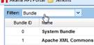

[[DATE]]
Note: With the 8.2.33 update, the format of the release notes has changed. They are now provided in both HTML and PDF to make them more easily accessible online and from any platform.
Legal
Copyright © [[YEAR]] Rogue Wave Software, Inc. All rights reserved. See also TradeMarks and Disclaimer
Changes Log
The table below shows changes made to this document since the initial release.
| Date/Release Version | Changes |
|---|---|
| 17 Oct 2017 | Updated to remove an item, SUP-16146, listed as a bug fix for version 8.2.22. This was not a bug and should not have been included. |
| 9 Nov 2017 | Modified the wording for an 8.2.24 bug fix, New setting for unique combination of virtual host and context path, to clarify the change. |
| 7 Feb 2018 | Corrected to include an 8.2.28 bug fix, Workflow exception error when re-registering services using WSDLs with wsp:policy declarations, which was omitted from the 8.2.29 release notes |
| 3-May-2018 | Moved the entry “Algorithm is not being verified on the inbound request”, SUP-17828, from the 8.2.30 release section to the 8.2.31 release section. |
Requirements
Note: This release requires Akana Platform version 8.2.10.
Supported Browsers
- Default Theme and Hermosa Theme:
- Firefox version 25 and later
- Chrome version 31 and later
- Internet Explorer version 9 and later
- Simple Developer Theme:
- Firefox version 32 and later
- Chrome version 38 and later
- Internet Explorer version 9 and later
Supported Databases
- MySQL 5.6
- Oracle 11g, 12c
- Microsoft SQL Server 2012 and 2014
The following database versions will be certified at a later date:
- DB2 9.7 and 10.5
The following MongoDB versions are supported:
- 3.2 to 3.2.18
Upgrading
To upgrade from version 8.0.5 or earlier, first uninstall a specific bundle, com.soa.oauth.interfaces, before starting the upgrade procedure. For instructions, see Pre-Upgrade Task for upgrades from 8.0.5 or earlier. You can also refer to the Akana API Platform Upgrade Guide (8.0 to 8.2x) on the Akana docs site).
Version 8.2.35
Bug fixes: 8.2.35
For expired tokens, status code 500 returned instead of 401
When signing and encrypting a JWT Token that had expired, a generic HTTP 500 (Internal Server Error) status code was returned to the user for an External OAuth Provider domain. If the OAuth Provider domain was used, an HTTP 401 (Unauthorized) status code was returned. This has been fixed so that HTTP 401 is returned for expired tokens for External OAuth Provider domains.
Support ticket: SUPPORT-3880
Network Director: Pipeline policy error
Because of a potential race condition under load, the Pipeline policy insert credentials component could fail with an error indicating that the SAML signature node could not be found in the SAML assertion. Under certain circumstances, this condition could result in permanent corruption of the SAML token until the next restart.
Support ticket: SUP-17490, SUPPORT-2120
Version 8.2.34
Bug fixes: 8.2.34
Policy Manager: Incorrect timezone and date range when custom API parameters are used
When specifying a custom date range, the date range was incorrect and based on the wrong timezone, so requests would return data from the incorrect time period. Now, the timezone is not submitted as part of the request, and the entered date range is converted to UTC time, fixing this issue.
Support ticket: SUP-16261
Process Editor: Transformation Activity creating normalized messages
In the Process Editor, the Transformation Activity was incorrectly creating a normalized message. Because the message was normalized, the SOAP envelope was re-added to the message, with the result that the downstream service could not read the request and the request failed. This was a regression from a fix in 8.2.27; any 8.2 versions prior to 8.2.27 should work as expected.
Support ticket: SUP-18459
Version 8.2.33
Enhancements: 8.2.33
New header connection property supports service-level multi-valued headers in a WSDL
HTTP headers can now be configured as multi-valued in the API descriptor WSDL. This forces a parse of the header value before it is passed to the downstream service in order to send each part as an individual value, normalizing the values and removing unnecessary spaces in certain cases.
Because this behavior is not always required or desirable, a new connection property http.multi.valued.headers allows multi-valued headers to be configured on a service basis rather than globally for the container, thus avoiding the parse operation when it is not required.
To use this new property, add it to the WSDL within the port element. For example:
<wsdl:service name="SimpleGETService"> |
<wsdl:port name="SamplePort" binding="tns:SimpleGETHTTPBinding"> |
<shttp:address location="http://SampleWSDL:9920"/> |
<soa:connectionProperty name="http.multi.valued.headers" value="x-test-header1, X-Test-Header2"/> |
</wsdl:port>
|
</wsdl:service>
|
Support ticket: SUP-18446
Support for mobile types of URI schemas in App OAuth Profile page
The App Oauth Profile page on the developer portal now supports mobile-type URI schemas for its Redirect URI authentication setting. For example:
com.googleusercontent.apps.902730282010-ks3kd03ksoasioda93jldas93jjj22kr:/oauth2redirect |
Support ticket: No related support tickets.
Version 8.2.32
Bug Fixes: 8.2.32
Additional algorithm validation added to WS-Security policy handler
The WS-Security policy handler was not validating algorithms in all scenarios.
SUP-17828
ATMO- 24086 for 8.2.32 {Status 5/15: Resolved } [Rev, Gerry 5/17]
WS-Security policy handler regression
An issue with message normalization could result in client consumer identities being overwritten by the downstream consumer identity.
SUP- 17676
ATMO- 23268 for 8.2.32 {Status 5/15: Reopened } [Rev Gerry 5/19]
Version 8.2.31
Bug Fixes: 8.2.31
Algorithm is not being verified on the inbound request
For security policies configured with a specific algorithm suite, the default behavior of the policy enforcement handlers is to allow sending requests that use a different algorithm suite without returning an error. In order to support validation of algorithms while retaining backwards compatibility, a new configuration property, com.soa.wssecurity -> validate.algorithms, has been introduced. By default, this is set to false. When true, the WS-Security policy handler will validate that the algorithms used for signatures and encryption match the configured algorithm suite.
SUP-17828
ATMO- 23573 for 8.2.30 {Status 4/18: Closed } Rev Gerry 4/18. [Moved from 8.2.30]
Network Director: Stack overflow error when updating a service
Parsing of scripting policies was occasionally causing a Stack Overflow Exception, because the mechanism used to embed scripts in XML sometimes resulted in an invalid XML document.
SUP-15640, SUP-16980, SUP-17935
ATMO- 23745 for 8.2.31 {Status 4/23: Resolved }[Rev, Gerry for 8.4.17
Improve WS-Security Policy logging
Additional logging is now generated to assist in debugging issues with the WS-Security policy handler.
ATMO- 23968 for 8.2.31 {Status 4/23: Resolved }[copy by Gerry, 5/
Version 8.2.30
Bug Fixes: 8.2.30
Network Director: memory leak in script processing
Compiled scripts are pooled to improve performance. Unused scripts were not being removed from the pool correctly, resulting in a memory leak that could ultimately lead to an Out Of Memory error.
SUP- 15356
ATMO-23824 for 8.2.30. Rev Gerry for 8.4.17
Policy Manager: pool exhausted when connecting to LDAP server
Multiple queries to an LDAP server were each opening a separate connection, exhausting the connection pool. The connection pool is now configured to block if no connections are available and the fairness flag is used to avoid thread starvation, addressing any potential leaks.
SUP-14058
ATMO- 23735 for 8.2.30 {Status 4/11: Resolved} {Also 8.4.17 ATMO 22435. Rev. Andrew, 4/11
JMS Proxy Issue—Lost messages
The default and legacy behavior of thesupID-from-word" JMS transport is to use Auto Acknowledge for incoming messages. Because of this, messages could be acknowledged, and removed from the incoming destination, but still fail to be forwarded to the target service, resulting in message loss.supID-from-word"
The ability to configure the acknowledgement mode has now been added (com.soa.jms > session.factory.defaultAckMode). When the Ack mode is set to client acknowledge, incoming messages are only acknowledged when they have been successfully forwarded to the downstream service.
SUP-15960
ATMO-23108 for 8.2.30 (Status 2/6: Resolved} {Copy: GW}
Error while retrieving the access point for a SOAP binding in Policy Manager
In an upgrade from 6.x to 8.2x, cloning hosted supID-from-word"services from Akana 6.x containers to Akana 8.x containers failed with null pointer exception errors, when the SOAP binding was missing the Transport URI extensibility element in the WSDL file. This has been fixed.
SUP-17453
ATMO-23245 for 8.2.30 {status 3/27: Resolved} {Rev Mujeeb for 8.4.16}
ATMO-23245 for 8.2.30 / ATMO-23244 for 8.4.16 + 8.5 {status 2/28: Resolved}
Intermittent startup exception in Network Director
There was an intermittent timing problem that could cause exceptions starting Network Director bundles that use the Java service loader mechanism to initialize the JAX-RS runtime delegate. The JAX-RS service factories were updated to do this as part of their initialization.
SUP-16597
ATMO-23009 for 8.2.30 {Status 2/28: Closed} | ATMO-22966 for 8.4.15 {Status 2/22: Closed} (Copy: GW 2/20)
API Designer: After adding model (schema), on edit, schema shows as “Any”
In API Designer, when defining the response for a resource for schemas defined as custom schemas, it displayed only Any as the result. Similarly, when editing the design, it showed up as Any rather than the custom schema. This has been fixed so that custom schema is saved and displayed correctly.
SUP-17536
ATMO-23307 for 8.2.30 {status 3/27: Closed} {Rev ArBa 3/1}
Activity name with size greater than 64 results in data truncation errors in Monitoring logs
For an API operation with a Process activity containing an Activity Name field that exceeded 64 characters, message data was not written to the logs, and the following error was generated:
UsageWriter failed to record usage log record in database. Data has been lost.
The new behavior limits new Activity Name entries to 64 characters, but allows existing names up to 128 characters.
SUP-15937
ATMO-23377 for 8.2.30 {Status 3/27: Closed} / ATMO-21695 for 8.5, 8.4.16 {Status 3/19: Closed. Rev Mujeeb, 3/16}
Some special characters not allowed in context path
After upgrade to version 8.2.6, certain special characters that had been previously allowed in the API context path—for example, the underscore—were no longer allowed. This has been fixed.
The special characters that are allowed in the context path are:
Forward slash (/), dot (.), hyphen (-), underscore (_), tilde (~).
SUP-17719, SUP-17666
ATMO-23231 for 8.2.30 (Status 3/27: Closed} {Rev AB 2/20) | ATMO-23230 for 8.4.15 + 2018.00 {Status 2/14/18: Closed}
Error when uploading a Swagger document while creating or updating an API
When designing or updating an API using a Swagger document, the developer portal was returning a null pointer exception at file upload with the message, “General system error. Contact system administrator.” This was due to the way extensions were being copied, which now checks for null values.
SUP-17833
ATMO-23333 for 8.2.30+2018.0 {Status 3/26: Resolved} | ATMO- 23561 Status: TRIAGE (Status 3/26: Closed}{Rev Andrew 3/26}
Network Director: outbound certificate configuration fails in two-way authentication
When configuring an outbound certificate in a Network Director cluster implemented with mutual (or two-way) SSL authentication (MASSL), Network Director was replacing the user-configured certificate with its own container certificate, resulting in a “certificate unknown” error.
SUP-17264
ATMO- 23461 for 8.2.30 and ATMO-23461 {Status 3/26: Resolved}{Rev Gerry 3/27}
Error when sending requests to Google News service
Some requests sent to the Google News service were failing and therefore causing some HTTP connections to remain open, because of improper handling of Set-Cookie headers with a null value.
SUP-18000
ATMO- 23521 for 8.2.30 {Status 3/26: Resolved} / ATMO- 23525 for 8.4.17 {Status 3/26: Resolved}{Rev: Gerry, 3/27}
Algorithm is not being verified on the inbound request
For security policies configured with a specific algorithm suite, the default behavior of the policy enforcement handlers is to allow sending requests that use a different algorithm suite without returning an error. In order to support validation of algorithms while retaining backwards compatibility, a new configuration property, com.soa.wssecurity -> validate.algorithms, has been introduced. By default, this is set to false. When true, the WS-Security policy handler will validate that the algorithms used for signatures and encryption match the configured algorithm suite.
SUP-17828
ATMO- 23573 for 8.2.30 {Status 4/18: Closed } Rev Gerry 4/18
Version 8.2.29
Bug Fixes: 8.2.29
JMS Stalling
When multiple service endpoints were deployed to the same JMS provider, changing one of the service access points would result in stalling on the other services. This was due to overly-aggressive cleanup of connections when a JMS endpoint was being reconfigured.
SUP-16775
ATMO-23099 for 8.2.29 (Status 2/6: Resolved} {Copy: GW}
Policy Manager: View References feature not working for some objects
In Policy Manager, in some cases, when the user selected View Process References for an existing process, the following error message was displayed:
Tree not available: null
This was a regression and has been fixed. Now, a tree of referenced objects is displayed.
SUP-16331
ATMO-22331 for 8.2.29 (Status 2/6: Resolved}{Copy BH 2/6}
Version 8.2.28
Enhancements: 8.2.28
Anti-Virus policy: modified messaging for increased security
In a scenario where the Anti-Virus policy generated an error response to the client because of an ICAP server error, the message included information that should not be exposed, such as the IP address of the ICAP server. This has been fixed so that sensitive information is not included in the error message.
ATMO-22119 for 8.2.28 {status 1/25/18: Resolved} / ATMO-22871 for 8.4.14 {status 1/16/18: Resolved} {Copy GW 1/16}
Akana Administration Console: Security improvement re special character and error treatment for login
When special characters were entered in the platform login fields, the Akana Administration Console login page was returning certain information that could potentially be used to extract sensitive information.
Messaging has been improved and standardized to be consistent and not share any information except that the username/password combination failed to authenticate.
ATMO-22914 for 8.2.28 {Closed 1/25/18} / ATMO-22916 for 8.5 + 8.4.15 {Closed 1/25/18} {Rev BH 1/25}
Akana Administration Console: Security improvement re potential username enumeration
The Akana Administration Console login page was returning different messages depending on whether the username was valid and the password was invalid, or the username itself was invalid. Returning different results could facilitate username discovery by a malicious source.
Messaging has been improved and standardized to be consistent across both use cases.
ATMO-22918 for 8.2.28 {Closed 1/25/18} / ATMO-22913 for 8.5 + 8.4.15 {Closed 1/25/18} {Rev BH 1/25}
Bug Fixes: 8.2.28
Anti-Virus policy strips attachments even when no virus is detected
When the Anti Virus policy was configured to scan and delete infected policies, and was attached to a service, even if the policy didn’t detect a virus it was deleting the attachment and not sending it on to the API endpoint.
SUP-14314
ATMO-21110 for 8.2.28 {Status 1/25/18: Resolved} / ATMO-22544 for 8.4.14 {Status 1/17/18: Resolved} {Rev OK GW 1/16}
ATMO-21110
[[[Reviewed by: GW 1/16.]]]
Policy Manager Contract Management API: Corrected example in generated doc
In the generated doc for the Policy Manager Contract Management API (ContractAdminService), the documentation for the GET /rest/contracts operation included a sample response in application/json, but the API returns only application/xml. When an application/json Accept header was used, the operation returned HTTP 404 (Not Found).
The generated documentation has been updated, since this operation does not in fact return application/json, only application/xml.
Generated documentation link for version 8.2.28:
- http://docs.akana.com/ag/assets/restApiDocs_ag82/swagger-Contract_Management_API.html
- http://docs.akana.com/ag/assets/restApiDocs_api-platform_84/api-http___soa.com_uri_products_ContractsManager_wsdl_1.0-ContractAdminService.html
SUP-15764
Internet Explorer: PM/ND Console logout triggers refresh-cycle
With Internet Explorer, if a user logged out of the Akana Administration Console for Policy Manager or Network Director, this action triggered a refresh cycle where the browser would keep refreshing the login page until the active window was closed. This has been fixed.
SUP-13148
JMS Stalling
In some cases, eviction of JMS sessions from the internal session pool resulted in the underlying connection being closed, causing intermittent traffic interruptions.
SUP-16775
ATMO-22912 for 8.2.28 {Resolved 1/30/18}/ ATMO-22915 for 8.4.15 {Open 1/25/18} {Copy GB 1/25}
Workflow exception error when re-registering services using WSDLs with wsp:policy declarations
After upgrade, in some cases where a service included a WSDL with wsp:policy declarations, the following error was generated on re-registering the service:
com.soa.workflow.WorkflowExecException: Error while executing workflow [The work flow state [Active] doesn't allow to modify work flow object for user [Local Domain\administrator]; when re-using WSDL that has wsp:policy declarations
SUP-14836, SUP-15797, SUP-16423, SUP-17534
Version 8.2.27
Enhancements: 8.2.27
New ability to access the JMS pseudo headers through scripting
In a scenario where the service flow involved scripted processing of JMS responses, the JMS “headers” such as JMSCorrelationID, JMSDestination, JMSTimestamp, etc., were not included in the message.
This is now configurable. When the com.soa.jms > jms.transport.factory.extendedHeaders configuration property is set to true, the additional JMS headers are inserted into responses from JMS providers.
Note: Incoming JMS headers are not propagated to the next hop. However, if this feature is enabled, downstream JMS headers will be returned to the original client.
SUP-16959
ATMO-22141 for 8.2.27 {Status 12/15: Closed}/ ATMO-22569 for 8.4.13 {Copy GW 12/14}
Bug Fixes: 8.2.27
API interface: issue with GET /api/users/{userID}/apis
This API operation returns the APIs for the specified user, and can be run by that user or by a Site Admin. However, when a Site Admin called the operation, APIs for the Site Admin were returned as well as APIs for the specified user. This has been fixed so that only the APIs for the specified user, per the UserID in the URL, are returned.
SUP-16381
ATMO-22473 for 8.2.27 {Rev MM} / ATMO-22418 for 8.4.13
Test Client: some query parameters included twice
In a scenario where the DetailedAuditing and AtmosphereApplicationSecurityPolicy policies were attached to an API, and Token Location set to QueryString, the API returned an HTTP 404 error.
SUP-17236, SUP-13167
ATMO-22411 for 8.4.12 (BSci no SUP) also dup ATMO-22427 for 8.4.12 / ATMO-22428 8.2.27 / ATMO-18697 for 8.5 {Rev: AB 11/28}
Policy Manager: Service Level Policy, limitation re time period ending at midnight
In Policy Manager, when defining an action on a Service Level Policy, it was not possible to set a time period that ended with midnight (00:00); the user interface didn’t allow it. This has been fixed so that midnight can be entered as 24:00.
SUP-17083
ATMO-22210 for 8.2.27 / ATMO-22390 for 8.4.13 and 8.5 {Rev OK BH}
Swagger API: for Delete operation, message processing not as expected
When an API was defined by importing a Swagger API Description document, with a Delete operation defined with a success response of 204, the platform was building the process without a Reply Node. This resulted in the behavior being asynchronous, and the operation not working.
In another scenario, a 400 error response was defined for a Delete operation, but the platform did not correctly relay the response body.
SUP-16471, SUP-16553
Swagger 2.0: External reference for an array is ignored
In a scenario where an API based on a Swagger 2.0 definition file included a schema defined as an array, in the same file, the API was created correctly, and if there was an external reference to an object, the API was created correctly. However, if the schema was defined as an array and was an external reference, the API definition was imported, but the schema was not. This has been fixed.
ATMO-21952 for 8.4.10 / ATMO-21698 for 8.5 {OK AB} / ATMO-22466 for 8.2.27
Response to DELETE doesn't accept schema
When an API was created by importing a Swagger document, and the Swagger definition included a response for an HTTP DELETE operation, the developer portal did not return the expected content. No content was returned; The schema in the DELETE operation’s response was ignored.
The in-line and remote references to the schema have now been added for DELETE operations.
SUP-16051, SUP-16376, SUP-15415
ATMO-22444 for 8.2.27 {Rev OK AnBa 12/12}
In OAuth grant requests, query parameters decoded twice
In a specific scenario where OAuth Resource Owner (password) grant requests were in use, and the resource owner username included a plus sign (+), the plus sign was represented as a space in the Subject claim of the JWT access token, due to double decoding. This has been fixed.
SUP-16539
SOAP to POX transformation not working after upgrade to 8.2.12
In a specific scenario, after upgrade from version 6.x to version 8.2.12, SOAP to POX transformation was no longer working. The Network Director returned an HTTP 500 error with the message:
Changing the version of a SOAP message in this manner is disallowed.
SUP-16698
SOAP, with algorithms on the request and response, not sending the configured algorithm
In a specific scenario where the physical service had asymmetric binding and WS-Security was using any SHA-256 Algorithm Suite, the platform was signing the request using SHA-1.
SUP-16404
Issue with JMS connections when migrating to 8.2
After upgrading to version 8.2.x, the Network Director was maxing the number of outbound JMS connections to the JMS provider, and would then need to be restarted.
SUP-16775
Version 8.2.26
Bug Fixes: 8.2.26
LDAP identity system enabled for developer portal login returns 404 on login
In version 8.2.25, if an LDAP identity system was enabled for login to the developer portal, developer portal login failed with an HTTP 404 (not found). This has been fixed.
ATMO-22401 for 8.2.26 / ATMO-22396 for 8.5, 8.4.12 {Rev OK MM 11/17. Noting here it was a regression introduced by SUP-16957
Version 8.2.25
Bug Fixes: 8.2.25
Special character in API endpoint URL causes developer portal to become unresponsive
If a space or special character was included in the endpoint URL for an API (API Implementation > Deployment Zone), and saved, the developer portal became unresponsive. This has been fixed so that invalid special characters are not allowed. Validation rules for the context path are:
- It cannot have spaces.
- Question mark (?) is not allowed.
- The following special characters are allowed: forward slash (/), comma (,), dash (-)
- No other special characters are allowed.
SUP-16599 / SUP-16318
Additional JMS properties added to container properties documentation
The following additional properties were added to the com.soa.jms properties documentation:
- jms.session.manager.maxIdleTime: Allows configuration of the maximum idle time for the session pools.
- jms.session.manager.maxSessionPoolSize: Allows configuration of the maximum size of the session pool.
For details, refer to the documentation in your installation folder (/docs/configAdmin subfolder), or on the Akana docs site: http://docs.akana.com/ag/assets/configAdmin_pm84/properties-com.soa.jms.html.
SUP-16775
Edit Design does not load
When an API was created in the developer portal from an imported Swagger document, the API details did not display correctly in the API Designer window. Instead, the Designer did not load, although the Swagger JSON was visible via the Swagger tab. This was because the Swagger had cyclic references within it, that caused recursion.
Note: The way that the developer portal treats cyclic references was modified in an earlier fix for version 8.2.17 (see Add API from Swagger document: objects of type Entity do not expand correctly). Fixing the current issue causes the earlier issue to resurface, an unavoidable regression.
SUP-16410
Developer portal Process Editor does not save modified process when branch activity is used with Split and Join activities
In a specific scenario where the Process Editor was used in the context of the developer portal, with Split and Join activities, when a process was saved the routing on the process was changed; the Split and Join routing was not correctly saved, and an error was generated to the log.
Tenant Information Context is reset as there is no tenant id associated with the context. This will allow UIApplicationAPI that is not tenant specific to start with a blank tenant information context
SUP-16703
LDAP security provider scheduled job running constantly
The LDAP security provider uses a scheduled job to evict connections from the connection pool. When the job repeat interval was set, the refresh interval was being treated as a seconds value, causing the job to run much more frequently than expected. This was causing performance problems and consuming unnecessary CPU.
This has been modified to use a single scheduled job for all LDAP domains, and there is now a configuration setting to control the eviction interval. The new properties are in the com.soa.security.provider.ldap PID.
SUP-16957
Enhancement to External OAuth Provider Configuration
The External OAuth Provider domain now sends the state and nonce parameters in the Authorization URL when the Provider Type is Other.
SUP-16446
JOSE Policy: App identity cert should be used on OUT if the Subject Category is Consumer
The JOSE policy was using the public key associated with the service endpoint to encrypt the message, even if the initiator Subject Category was set to Consumer.
This has been fixed so that if the initiator Subject Category is Consumer, the public key/identity certificate associated with the consumer app is used for outbound encryption.
SUP-16877
ATMO-20654 for 8.4.1 / ATMO-20414 and ATMO-20641 for 8.2.17 / ATMO-20656, ATMO-20338, ATMO-22218
Version 8.2.24
Enhancements: 8.2.24
Swagger 2.0: Support of example values for parameters on endpoints
The platform now supports example values for parameters in Swagger 2.0. If an example is provided in the imported JSON Swagger document, it is displayed in the Schema column on these pages/sections:
- API > Details
- API Designer > Models
- API > Documents
SUP-16257
ATMO-22070 for 8.2.24 {status 10/18: closed} {Rev OK AB} / ATMO-22069 for 8.4.11 / ATMO-21382 for 8.5
Bug Fixes: 8.2.24
New setting for unique combination of virtual host and context path
In version 8.0, it was possible to publish multiple APIs with the same context path; for example, to have just a backslash (/) as the context path.
However, in a later version, a validation check for unique combination of virtual host and context path was added. In some cases, this caused the API path to be automatically modified so that it was unique. Some instances that had multiple APIs with a backslash as the context path were affected by this.
Version 8.2.24 includes a new API setting, Validate that API context path is unique. By default, this setting is enabled, so that unique combination of virtual host and context path is validated. However, the Site Admin can modify the setting so that different APIs can have the same combination of virtual host and context path. This gives the tenant the flexibility to keep the validation check for unique path (the default), or to disable it.
ATMO-21714, ATMO-22076
Lifecycle Integration: Unable to push LM service to PM using fragmented by-ref WSDL/Schemas
In a scenario where Lifecycle Manager 8.0 was in use with Policy Manager 8.2.x (without Community Manager), and the communication from the Policy Manager server to the Lifecycle Manager server required SSL, the initial publish of a service from Lifecycle Manager to Policy Manager after a long period of inactivity or after a restart of the Policy Manager server was failing. This has been fixed.
SUP-15287
ATMO-22024, ATMO-22099, ATMO-22100
With Basic Auth enabled, container admin health can be accessed without providing credentials
Even with Basic Auth enabled on the container admin health service, it was possible to access container health information without providing Admin Console credentials.
SUP-16220
ATMO-22010 for 8.2.24 {Copy: GW}
Version 8.2.23
Enhancements: 8.2.23
Updated workflow allows email to be sent to API admins when a comment is made on a pending API access request
Workflow functionality has been enhanced to support updating the workflow that manages the API access request approval process, so that an email can be sent to API Admins when a comment is made on a pending request. Previously, this notification email was sent only to the app developer.
In the Comments workflow, the SendNotification function was added.
SUP-12974, SUP-12090
ATMO-21949 for 8.2.23 {Status 10/5: Closed} / ATMO-18458 for 8.5
Bug Fixes: 8.2.23
Business Admin cannot add domain
In version 8.2.17, a user who was a Business Admin but not a Site Admin did not have access to the Domains option on the Administration menu. This has been fixed.
SUP-15668
Policy Manager HTTP enforcement policy not being enforced properly
The Policy Manager HTTP enforcement policy was not being enforced properly. This has been fixed.
ATMO-21883, ATMO-21891
Script and WSDL persistent cache performance issue
Due to the locking mechanism used to synchronize access to the persistent WSDL and script cache, threads could block in some cases for an indeterminate period of time, which could cause message processing delays. The locking mechanism was changed to avoid this problem.
SUP-16391
New ability to disable the WSDL persistent cache facility
A new configuration property was added to support disabling the persistent WSDL cache in scenarios where disabling the cache might be necessary, for debugging purposes or for performance.
The new configuration property is: com.soa.wsdl > wsdl.storage.manager.enabled.
SUP-16391
ATMO-21313, ATMO-21477
MongoDB: Container state property not updating correctly
In a scenario where MongoDB was in use, the last modified timestamp for the container state was being continually updated, which led to repeated alerts that the container had become active, and then become unresponsive again.
SUP-16036
Container state not updating properly when using MongoDB
When MongoDB was in use, in some cases, the container state became unresponsive.
SUP-16036
When authorization is set up for an API, if an app is not authorized, platform returns HTTP 500 rather than 401
In a scenario where an API was using authorization such as two-way SSL or OAuth, if an app that wasn’t authorized for API access called the API, the platform returned HTTP status code 500 rather than 403 Forbidden which is the correct authorization error response code.
Note: This issue was included as a fix in version 8.2.22 but not fully resolved.
SUP-11970, SUP-15646
Version 8.2.22
Enhancements: 8.2.22
API Test Client shows all apps for selection but returns Unauthorized error for unauthorized apps
When testing an API in Test Client, the Apps drop-down list was showing all apps, but then returned an Unauthorized error if the user chose an app that he/she didn’t have permission to use.
Now, if the user chooses an app for which he/she doesn’t have authorization, Test Client displays the following message:
To use this app in Test Client, you will need to provide the app’s shared secret. Please contact an app team member.
SUP-14856
Bug Fixes: 8.2.22
With MongoDB, General System Error when loading the Apps > Monitor page
In a scenario where MongoDB was in place, when loading the Apps > Monitor page in the developer portal, a General System Error appeared for a moment. The error did not affect functionality; everything on the page loaded correctly. This error has been fixed.
SUP-16099
With MongoDB, exporting CM logs only exports a single row
In a scenario where MongoDB was in use, exporting CM logs was exporting only one row. This has been fixed.
SUP-16094
Cannot remove group memberships if inviting user has been deleted
In a scenario where User A invited User B to be a Site Admin or Business Admin, User B accepted, and then later User A was removed from the system, it was not possible to remove User B from the Site Admin or Business Admin group. The developer portal returned an error, “Could not remove member.” This has been fixed.
SUP-15554
When authorization is set up for an API, if an app is not authorized, platform returns HTTP 500 rather than 401
In a scenario where an API was using authorization such as two-way SSL or OAuth, if an app that wasn’t authorized for API access called the API, the platform returned HTTP status code 500 rather than 403 Forbidden which is the correct authorization error response code.
Note: This issue was included as a fix in version 8.2.22 but was not fully resolved.
SUP-11970, SUP-15646
Platform JWT tokens do not follow RFC 7519 with regard to expiration
In some scenarios, JSON Web Tokens (JWT tokens) were expiring after a short period of time whereas, per the settings, they should be valid for some days. In addition, where messages were processed by multiple deployment zones, in some cases there were differences in the validity period, resulting in a token being rejected as expired and then, a little later on, being accepted as valid by another deployment zone.
This was because the platform’s implementation of JWT tokens was not validating time correctly, taking into consideration future time and clockSkew value. The platform was using a default time of 20 minutes as the default for IAT (issuedAt) claim expiration, rather than calculating the expected time based on the issuedAt and clockSkew properties.
SUP-15264, SUP-16640
Test Client: HTTP PATCH method not working
Operations using the HTTP PATCH method were not working in Test Client. Instead of working as expected, the platform was returning an HTTP 501 (Not Implemented) server error. This has been fixed. The behavior in Test Client is now the same for HTTP PATCH as it is for HTTP POST.
SUP-15294, SUP-15719
Version 8.2.21
Bug Fixes: 8.2.21
Hermosa Theme: Small text entry area in certain fields that support Markdown when Markdown is turned off
Many fields in the developer portal, generally Description fields for resources such as apps, APIs, and tickets, can support Markdown. However, the Site Admin can disable Markdown support in the settings for certain resources.
In a scenario where Markdown was turned off, in some cases the entire text field area was not available for data entry. Instead, only a small area of the field was available.
SUP-15934
With CORS policy attached, certain headers have duplicate values
In a specific scenario, when the CORS policy was in effect, the platform was adding double values for certain request headers; for example, Access-Control-Allow-Origin had the same hostname value twice.
SUP-15609
Database queries running too many times
Specific database queries were running too often. This has been fixed.
SUP-10381 / SUP-15516
Version 8.2.20
Bug Fixes: 8.2.20
Multiple service errors in log file: “No key found in WSDL for service”
In a scenario where an implementation of the Akana API Platform included multiple Network Directors, with services distributed across Network Directors rather than all hosted on all Network Directors, specific errors were populating the log file. For services hosted on one Network Director but not on a second, errors were generated to the log file for the second Network Director instance, with the message:
No key found in WSDL for service {service_name}
The services can be retrieved, but do not have an address or service key element when the WDSL is retrieved by the Network Director, since the service is not hosted on that specific container.
The platform has been changed so that these messages are recorded as warnings rather than as errors.
SUP-16145
Pipeline Policy security component: User ID is picked from different domain
In a scenario where an implementation included a DataPower Pipeline policy security component with two LDAP domains, the domain from which the ID/username was taken was not consistent. In some cases, the ID/username was taken from the correct domain; in other cases, it was taken from the wrong domain.
SUP-14659
Unable to create users from the Policy Manager Console in the local domain
In the Policy Manager console, after upgrade to version 8.2.19, there was a problem adding users in the local domain. The information was not saved, and no errors were generated. This has been fixed.
SUP-16090
Version 8.2.19
Bug Fixes: 8.2.19
Deletion fails for API implementations with missing design service
In a scenario where an API had been migrated from an earlier version and didn’t have the associated API design service, when trying to delete an API implementation, the deletion failed, with the following error: "Business service with key [null] not found."
SUP-15737
ATMO-20970 for 8.2.19 {{RESOLVED 6/26 removed 6/26 from 8.2.19 per MM}}/ ATMO-20808 for 8.4.4
Network Director appends additional elements to SOAP request
In a specific scenario, when sending a SOAP request, the Network Director appends an additional element, ReceiveNLETSMsgSync, in the body of the request.
SUP-15836
Create API from Swagger import: some operations missing
When creating an API by importing a Swagger file, in a specific scenario, some of the resource paths were missing. This was because some operation IDs were interpreted as duplicate and were therefore overwriting each other.
The logic has been improved to create more readable operation IDs that will be unique in all cases.
Note: When designing an API, this problem can also be avoided by making sure operation IDs are unique.
SUP-15654 / SUP-15987
Developer Portal and Akana Administration Console: field validation
In some cases, the developer portal and/or Akana Administration Console accepted user input that was formatted as JSON data; in other cases, if certain special characters were provided as field input, such as %2F, %00, or %7c, the platform returned an HTTP 500 message.
Field validation has been improved to resolve this issue.
ATMO-21139 for 8.2.19 / ATMO-21235 for 8.4.4 / ATMO-20800 for 8.5
Unexpected behavior with special characters in a specific environment
In a specific scenario where encoding was set to ISO-8859-1 and a SOAP request included special characters, such as an umlaut (ü), the SOAP request generated an error, although in a different environment with the same setup, the same special characters did not cause a problem.
The error message that was generated:
Invalid byte 1 of 1-byte UTF-8 sequence.
SUP-15660
MongoDB: Export update data: option to include recorded data is cleared, but it is still included in the export data
When exporting usage data for a virtual service with MongoDB in use, with the Detailed Auditing policy attached and the default export option selected, recorded data should not be included in the export data, but was still being included.
SUP-15480
Version 8.2.18
Bug Fixes: 8.2.18
Policy Manager: 500 error when trying to view a custom component
In a specific scenario when running a DB2 database, after upgrading from version 7.2 to version 8.0, trying to view a custom component returned a 500 error. The response message included the below:
Error in executing query for Prepared statement.
SUP-14550
Possible denial of service vulnerability due to user avatar size parameter
The platform supports uploading of an image for several resources including users, apps, APIs, and groups. There was no file size restriction in the upload API; in addition, the processing time compounded when larger size values were provided. By using this API with a large size parameter, potentially in multiple instances, it could be possible for an attacker to overload the back-end processing and cause service outages.
These operations have now been changed so that the maximum file upload size is a 1000-pixel square.
ATMO-20775 for 8.4.3 for Barclays / ATMO-20965 for 8.5 / ATMO-20967 for 8.2.18
Group invited to Private API cannot view API details
When a Private API with no licenses attached had a group invited to have visibility of the API, a member of the invited group did not have permission to view the API Details page. Instead, an HTTP 401 (Unauthorized) error was returned.
SUP-14217 / SUP-14348
Visibility of certain web file descriptors
Certain specific web file descriptors, the deployment descriptors for the Java-based servlets designed to run on the target application, were publicly exposed in the platform. It is better not to share this information. ATMO-20776 for 8.4.3 for Barclays / ATMO-21057 for 8.2.18 / ATMO-21059 for 8.5
Migration failure for some APIs when upgrading from 7.2 to 8.2
Certain APIs did not migrate correctly during the upgrade from version 7.2 to 8.2. APIs that had been created in Policy Manager and then virtualized, and were then added to the developer portal using the Publish an existing service as an API option, were not migrated correctly.
SUP-15759
JSON2XML converter method package path not documented correctly
In the generated documentation for the JSON2XML converter, the full path was not included with the filename, resulting in the file not being found.
This file has now been updated so that the generated documentation included with the build includes the full path.
SUP-15548
Alert message copy is hardcoded and should be a locales message
A specific Alert message relating to the file upload scenario had hardcoded message text. This meant that the text could not easily be modified locally.
This has now been updated so that the text is pulled from the locales file. It can therefore be translated or modified locally if needed.
ATMO-21101, ATMO-21103, ATMO-21104
Version 8.2.17
Bug Fixes: 8.2.17
Oracle database: In some cases, running scheduled job refreshDeletedEntries returns ORA-01795
An issue occurred relating to the running of the scheduled job refreshDeletedEntries with an Oracle database. In some cases, the number of deleted entries in the list was so great that the scheduled job did not run successfully, returning an error, ORA-01795. In this scenario, it was necessary to run manual database queries to resolve the issue.
SUP-14021
Add API from Swagger document: objects of type Entity do not expand correctly
In some cases, when an API was created from a Swagger document, Swagger objects of type Entity were not being expanded correctly.
SUP-15133, SUP-13752
API Implementations page: 500 error on loading certificates using GET rest/services/{key}/pki/info
When a user was logged in as Site Admin and was viewing the API > Implementations page for an API he/she was not an API Admin or Business Admin for, the developer portal was attempting to load the certificate information and failing, with an HTTP 500 error message and an empty Contracts section on the page.
This has now been fixed. Site admins do not have Details and Implementations tabs in the left menu.
SUP-15203
NPE while adding an API
In a scenario where an API was added without including the Api version information in the request payload, a null pointer exception was returned.
SUP-15568
Incorrect value for Homefeed request resulting in bad link in new user notification
The developer portal was including an incorrect value in a request, resulting in an incorrect link in the “welcome to the platform” notification issued to a new user.
SUP-15557
Version 8.2.16
Bug Fixes: 8.2.16
On some pages, top navigation bar displays user profile ID rather than username
The developer portal displays the username (FirstnameLastname unless customized, for example JaneMead) in the top navigation bar. On some pages, the developer portal was displaying the UserID instead of the username.
SUP-13382
Test Client ignores Operational Mapping for License/Scope
In a scenario where certain operations in an API were mapped to certain licenses/scopes, the operation-level mapping was being ignored. As a result, anonymous users (user not logged in) could access operations in Test Client which should not be available to them.
SUP-13943
Public API Setting is disabled, but APIs are still created as Public
Even though the setting where the Site Admin can control whether users can create public APIs (Administration > Settings > APIs) was disabled, so that users should not be able to create public APIs, new APIs were being created by default as public APIs.
SUP-14842
In Policy Manager Managed Services feature, one bundle is not installed
When creating a Policy Manager Runtime container with only the Policy Manager Managed Services and Policy Manager Security Services features installed, a required bundle, the SOA Software Dynamic Security Module Deployer bundle, was not getting installed. The result was that LDAP domains were not visible after logging in to the Akana Administration Console.
SUP-14591
OAuth: access token validation fails if JWT aud claim is present
In a scenario where the OAuth domain was using an external OpenID Connect provider that included the JWT aud (audience) claim in the access token, the OAuth access token validation was failing.
ATMO-20201
During upgrade, Upgrade CM Models task generates an error
During upgrade to 8.2.9, the Upgrade CM Models upgrade step was generating the following error:
Some of the model objects are not updated. Refer to log files for the specific errors.
SUP-14284
Response with cache-control header of public, without ma-age header, results in NullPointer
In a specific scenario, where the default caching policy was attached to a service and the downstream service response had a cache-control header with a value of public, a null pointer exception was generated, with a 500 internal server error.
SUP-14984
Version 8.2.15
Bug Fixes: 8.2.15
API Platform 8.2.x and IMS 8.0 errors when hosting a service on an IMS container
There were issues in setting up the Intermediary for Microsoft (IMS) product with the API Platform version 8.2. When hosting a service on an IMS container, connection failed, and multiple alerts were generated in the Policy Manager workbench with the message:
Invalid Service Key
SUP-14622, SUP-14486
API Platform upgrade to 8.2.10: Update of a REST service fails
Update of REST service was failing due to unnecessary WSDL validation steps.
SUP-14701
Upgrade CM Models task fails when migrating legacy APIs when WSDL operation names include special characters
Some APIs created in earlier versions of the platform had special characters in them. The upgrade task Upgrade CM Models was failing with these APIs.
SUP-13749
API Swagger generation includes elements that fail validation
The Swagger document created by the API Designer included certain elements that caused it to fail validation when validated at editor.swagger.io.
For example, it was changing data type integer to int.
SUP-14755
Add API not available in the developer portal after API owner added in Policy Manager
When a user was added to the list of API owners in Policy Manager, the user was not able to add a new API in the developer portal. The Add API option (from the Plus menu) was not available.
SUP-14494
Intermittent restart issues due to duplicate package names
The platform was restarting intermittently because there were two separate instances of the same package name.
ATMO-20004 for 8.4 / ATMO-20005 for 8.2.15
XSS possible on some CM paths
Certain API operations were open to the possibility of appending certain values that might cause a vulnerability to an XSS attack.
For example, in the below, ';alert(1)// appended to the end of the URL could be a security vulnerability:
http://acmepaymentscorp.com/atmosphere/users/';alert(1)//
The above results in modifying the JavaScript returned by the server so that an alert is created and displayed in the browser window.
The applicable operations have been modified so that this is not allowed.
ATMO-20086
Version 8.2.14
Bug Fixes: 8.2.14
Hermosa Theme: In API Designer, Edit icon not visible for editing model objects
In Hermosa theme, after model objects had been added, either by importing a Swagger file or by creating them in the API Designer, the Edit icon was not displayed correctly, so users had difficulty editing or deleting the model objects. This was not an issue in Default Theme.
SUP-12390, SUP-14754, SUP-13276, SUP-14869
Elasticsearch now supports secure connections
In previous versions, all Elasticsearch communication were via non-secure communication. Elasticsearch can now be configured to support secure communications using these additional properties:
Property |
Value |
shield.ssl.keystore.path |
/home/es/config/shield/node01.jks |
shield.ssl.keystore.password |
myPass |
shield.ssl.keystore.key_password |
myKeyPass |
shield.transport.ssl |
true |
shield.http.ssl |
true |
SUP-14460
When export includes App data, error message “Error occurs while exporting objects of type [Business].”
When users tried to export business information from the developer portal, if app data was included in the selections, an error was generated and the export failed.
SUP-14650, SUP-13892
Version 8.2.13
Bug Fixes: 8.2.13
Lifecycle Manager integration: HTTP client connection pools are exhausted when importing WSDLs from LM
In a scenario where the Lifecycle Manager integration with the developer portal, after the developer portal was running for a while the following timeout error was generated even though there were still available connections in the http.client pool:
Caused by: org.apache.http.conn.ConnectionPoolTimeoutException: Timeout waiting for connection from pool
SUP-14554
Version 8.2.12
Bug Fixes: 8.2.12
Creating a SOAP API via imported WSDL in the developer portal adds policies on Design service rather than Target service
When a SOAP API was created in the developer portal by importing a WSDL file, the policies were created as design artifacts of the API rather than as part of the Target physical service (the physical service that the implementation uses).
SUP-14233
Outbound emails getting stuck in the message queue
Outbound emails were getting stuck in the message queue (MSG_QUEUE), with the following error generated to the log files: “Error in decoding the message.”
SUP-13911
Cannot save Swedish characters in an operational script policy
Swedish characters used when creating an operational script policy were not saved correctly. Instead, they were saved as question marks.
SUP-14184
Email alerts not showing the correct value for Alert Origination Date
After upgrade, email alerts that include the Alert Original Date were generated with an incorrect value for this field.
SUP-14031
Error in conversion from string to FDN
There was a bug in the conversion of a string to an FDN (fully distinguished name; for example, {uniqueid}.{FedMemberID}. In scenarios where there were multiple dots in the string, the first dot was identified as the separator, resulting in an invalid FedMemberID if there were multiple dots in the string. For example, a string of abc.def.fedmember was converted so that the FedMemberID would be def.fedmember.
This has been modified so that the string after the last dot is used as the FedMemberID.
SUP-14553
When registered users have permission to add API, registered user who is not an API Admin can approve his or her own API access request
In a scenario where the platform defaults had been modified to allow registered users the ability to add an API, a registered user who requested access to an API was able to authorize the API access request even though the user was not an API Admin for the API. This has now been fixed. Only a Business Admin or an API Admin for the applicable API can approve an API access request.
Note: By default, registered users do not have permission to add an API. This issue occurred only when the default user permissions were modified.
SUP-14315
Truncated policy/key names resulting in duplicate names
In a scenario where an imported WSDL included policy/key names longer than the allowable 128 characters, the names were being truncated, resulting in duplicate policy/key names.
The platform has now been modified to generate an error if truncation results in duplicate policy/key names.
SUP-14234
Creating a SOAP API via imported WSDL changes the workflow state of policies attached to the API
After creating an API by importing a WSDL, either in Policy Manager or in the develop portal, although the policies attached to the API were in Active state, after import the associated policies were in Draft state.
SUP-14234
Version 8.2.11
Bug Fixes: 8.2.11
404 error when accessing external OAuth token endpoint in Test Client
Test Client was returning a 404 error when an API call was requesting a token from an external OAuth provider, although the token URL worked when using a standalone client.
SUP-13927
Search not updating visibility correctly
In a scenario where an API was imported with a specific visibility, the visibility was changed, and the API was then deleted and re-imported, the Search feature was using the revised visibility setting for the initial import, rather than the setting for the re-imported API.
This was caused by a delay in queuing the API for reindexing. The Edit API Details feature has now been modified to immediately queue modified objects for indexing. Note there might still be a short delay before a queued object is picked up for search indexing.
SUP-14002
In a container with only Community Manager installed, system health tool bundle doesn’t start
In a scenario where a container had only Community Manager installed, not Network Director or Policy Manager, the system health tool bundle was not starting. Instead, it stayed in a “Starting” state.
SUP-13338
Version 8.2.10
Bug Fixes: 8.2.10
Login Settings and Password policy settings both return 401 for Site Admin
The Administration > Settings pages for Login Policy and Password Policy should be available to a user who is a Site Admin, but these pages were only available if the user was a Business Admin as well as a Site Admin.
Note: This item was included in the 8.2.9 release notes; however, the update was not included in the non-cumulative update for 8.2.9. It is included for 8.2.10.
SUP-13970
SQL injection attack possible from API operation to export transaction logs
A security vulnerability was identified with the operation to export transaction logs: GET /api/apps/versions/{version id}/txlogs/export. A specific parameter was found to be vulnerable, and was fixed.
SUP-14224
Default CorsAllowAll policy is configured incorrectly
There was an error in the configuration of the default CorsAllowAll policy. The Allow Credentials property was set to true; the default value should be false.
ATMO-19618 for 8.0.10 / ATMO-19617 for 8.2.10 / ATMO-19616 for 8.
Regression in HTTP Security Policy
A regression in the HTTP Security Policy meant that it was not possible to authenticate a subject using another policy and then use the HTTP Security Policy to insert the associated SSO session cookie into the response returned to the client. In previous versions, this had been supported. This regression has been fixed so that this functionality is available.
SUP-13799
API platform does not accept and validate “--” as part of the URL for an API endpoint
When creating an API from scratch, the platform would not accept a URL that included two consecutive dashes. Instead, an error was returned.
SUP-13686
Corrupted WSDL caused interruption in Network Director processing
In a scenario where an API service included a WSDL file that had become corrupted, the Network Director could not process requests from the virtual service. This resulted in repeated errors until the Network Director instance was restarted. This has been fixed so that if the WSDL file becomes corrupted, it is retrieved again.
SUP-11128
Version 8.2.9
Enhancements: 8.2.9
With Akana cluster support, console master/slave synchronization supports SSL
With the Akana Cluster Support plug-in installed, master/slave synchronization now supports SSL.
Properties changed on the master in the com.soa.admin.console configuration category are now propagated to slave containers when SSL is in use.
SUP-13190
Bug Fixes: 8.2.9
Hermosa theme: session expiration not working correctly
The setting that controls inactive login session timeout (Administration > Settings > Login) was not working for Hermosa theme. This setting now works for all themes.
SUP-13937
Login Policy page, Inactive Login Session Timeout field: tooltip corrected
The tooltip on the Site Admin’s Login Policy page, Inactive Login Session Timeout field, was corrected so that it isn’t theme-specific.
SUP-13937
Hermosa theme: API > Forum option not available for API Admins
In Default Theme, the Forum option appeared on the API Admin menu; however, this option was missing from the menu in Hermosa theme.
SUP-13881
DB2: Intermittent errors on startup
An intermittent error was occurring on startup when using DB2. The database bundle has now been modified to include a dependency on a javax.transaction to ensure that the dependency has been loaded and is available to the database bundle.
ATMO-19403 for 8.2.9 / ATMO-19402 for 8.0.12 {{GW OK}}
Policy Manager: errors generated when changing service organization
In Policy Manager, when running the Change Organization wizard to move physical services to a different service organization, the action resulted in an error.
SUP-13746
Policy Manager: When exporting organization rollups, column name is misspelled in export data
In Policy Manager, when deleting old rollup data, errors were generated because a column name in the rollup data file was cut off (MINMSGSIZ, should beMINMSGSIZE).
SUP-14059
With Ping feature, Network Director might fail to deploy virtual services
In a scenario where the Ping feature was installed, in some cases the Network Director failed to deploy virtual services due to a race condition bug.
SUP-14033
Policy Manager: CSRF error on updating physical service
In a scenario where a SOAP API needed to be changed in Policy Manager, a CSRF error was generated. Going to the physical service of the API, choosing Update Service, and uploading the new ZIP archive file caused a “CSRF attack detected” message, and the operation was not successful.
SUP-13976
On import, generated access point is lost
In a scenario where a service was created with multiple access points (one default access point that was automatically generated, and an additional access point that was manually created), there was an issue with export/import. When the information was exported from one installation and then imported to a second installation, the manually created access point was present but the automatically-created access point was lost.
SUP-13944
When adding an API, user should be able to define API deployments
When adding an API to the API Platform, the platform automatically deploys the API on all eligible deployment zones.
The operation for adding an API allows the user to specify information about the deployment zones they want to deploy the API on, but this information was ignored. The code has now been changed to process the user’s deployment zone specifications.
If no deployment zones are specified in the API request, the platform deploys the API on all eligible deployment zones. However, if one or more deployment zones are specified in the request, the API is implemented only on the specified deployment zones.
Note that this functionality is currently supported only in the API.
ATMO-19381 for 8.2.9 / ATMO-19380 for 8.4.0 (MM/TG)
Login Settings and Password policy settings both return 401 for Site Admin
The Administration > Settings pages for Login Policy and Password Policy should be available to a user who is a Site Admin, but these pages were only available if the user was a Business Admin as well as a Site Admin.
SUP-13970
Version 8.2.8
Bug Fixes: 8.2.8
After entering a one-time password received in email, the portal user is left on a blank page
The user was left on a blank page after entering the one-time password sent in email when signing up.
SUP-13727
“No process found error” generated after updating schema of a SOAP service
A “no process found” error was reported by the Network Director for a SOAP service that was updated with a new schema. The issue occurred when the user chose to update the existing interface with the new schema.
SUP-13660, SUP-13433
Content missing for logged message in Analytics Log page when using auditing policy with custom label
If an auditing policy was attached to an API that recorded message content and used a different label than the default label (APPLICATION), the content of the message was not displayed in the Analytics Log page.
SUP-13398
Version 8.2.7
Enhancements: 8.2.7
Ability to support multiple OAuth scopes using an OR
Previously, the platform’s OAuth support included support for multiple scopes for an operation, but all scopes had to be present in the access token (“AND” scenario). Now, this feature has been enhanced to support a scenario where multiple scopes are defined for an operation but only one scope is required in the access token in order for the request to be successful (“OR” scenario).
SUP-13062
Support for PingFederate 8.1.x
Client registration for PingFederate clients using the External OAuth Provider Domain was not working with PingFederate 8.1.x. The platform has now been enhanced to support PingFederate 8.1.x.
SUP-13020
Bug Fixes: 8.2.7
In imported RAML file, cannot edit parameters for POST operations
If an API was created by importing a RAML API description document, parameters for POST operations could not be edited.
Parameters for other types of operations could be edited, and new parameters could be added, but imported parameters for POST operations could not be edited. Instead, an error was generated.
SUP-13423
PingFederate Domain: incorrect lookup for Client Registration URL returns exception when not found
In a scenario where the domain type was the legacy PingFederate domain and the Client Registration endpoint was not enabled, the platform was looking for the Client Registration URL, which it should not in this scenario, and was returning an exception because it was not found. It should only look up the Client Registration URL if the domain type is External OAuth Provider and the Provider type is PingFederate. This has been fixed so that if the Client Registration URL is not defined in the well-known configuration file, the platform treats it as though client registration is disabled.
SUP-11036
Test Client: Custom header added in Parameters section of API Designer does not display correctly
If a custom header was entered in the Parameters section of the API Designer, as a header parameter, it was not treated as a header in Test Client. Instead, it was shown in the parameters section and could not be seen in the request headers.
SUP-13556, SUP-13509
Version 8.2.6
Enhancements: 8.2.6
Returning app transaction logs time out with large data volumes
With large volumes of data, a request for the app transaction logs was timing out.
ATMO-18863 for 8.2.6 (CLOSED at 10/12/16) ATMO-18878 (RESOLVED at 10/12/16)for 8.2.6 / ATMO-18848 for 8.3
Expanded/enhanced AMQP support
Several changes were made to expand, and improve, AMQP support, including these enhancements:
- The platform now supports AMQPS for physical services.
- Platform support of AMQP was expanded to include support of virtual hosts without a leading forward slash (/) in the virtual host name.
In addition, these issues with AMQP support were resolved:
- Default AMQP exchange should be blank and left to the broker.
- When creating AMQP messages with non-string message parts the wrong content was sent.
- With a proxy API implementation, if the physical service had an AMQP endpoint the implementations were not loading.
- In the user interface, when adding an API, an AMQP endpoint was not accepted; an error was generated.
ATMO-18871 / ATMO-18861 / ATMO-18882/ ATMO-18880, ATMO-18886 / ATMO-18887,ATMO-18889, atmo-18888 for 8.2.3, ATMO-18870
Bug Fixes: 8.2.6
API Details not displayed correctly
For an API created from an imported API description document, the operation-specific details were not displaying correctly on the API Details page. The details were visible on Edit, and present in the API documentation, but were not displayed in the summary view.
SUP-13277, SUP-13373 , SUP-13381, SUP-13408
Error in Kerberos Identity System configuration UI
There was an issue with the second page of the Kerberos Identity System configuration wizard; the processing of the Realm-to-Domain mapping section resulted in an error.
GET /api/apis operation with BusinessID parameter returns all APIs including deleted APIs
There was an issue when using the GET /api/apis operation with the optional BusinessID parameter. If that parameter was used, deleted APIs for the business were included in the response.
ATMO-18769 for 8.2.6 / SUP-13355 SUP-13355
On adding new API version, option to “Publish an existing service as an API” appears even when option is disabled in platform settings
In a scenario where the ability to publish an existing service as an API was disabled, this option was still appearing when the user was creating a new version of the API.
ATMO-18771
PreparedStatement leak in SLAConfigurationDaoImpl.java
In version 8.0, there was a PreparedStatement leak in SLA processing.
ATMO-18800 for 8.2.6 / ATMO-18797 for 8.3 / SM-19634 8.0.12
In version 8.2.4, Invite New Users link returns error and fails
In 8.2.4, the link on the top navigation bar to invite new users was failing and returning an error.
SUP-13360 SUP-13413 SUP-13294
OAuth Provider Domain setup: special characters not allowed in OAuth scopes
When setting up the OAuth Provider Domain, in the Scopes tab, special characters were not allowed in the scope names. Only numbers and letters were allowed.
This has been modified to allow the special characters supported by the OAuth specification.
ATMO-18824 {{Resolved at 10/12/16}} / SUP-134 SUP-13435
Add messaging for scenario where both “Add API” options are disabled
When both options to add API were disabled, Add a new API and Publish an existing service as an API, platform was still showing the Plus menu with no choices and no messaging. Messaging has now been added to inform the user that the feature is currently disabled.
ATMO-18853 for 8.2.6 / ATMO-18852 for 8.3
Policy import does not trigger@ImportPolicy workflow initial action
When a policy was imported, it was triggering the @Create initial action instead of the @ImportPolicy initial action in the underlying workflow. This meant that when a policy was imported, it was not automatically activated.
ATMO-18855 for 8.2.6 / SM-19633 for 8.0.12
Create service wizard does not allow parts for messaging services
The Create Service wizard was using the WSDL PortType/Schema definition pages for the messaging binding instead of the operation/message/parts pages like the HTTP binding. Message parts are essential to the messaging binding and therefore needed to use the non-WSDL pages.
ATMO-18892
Resource Owner Credentials grant type not working with a SAML Resource Owner Authentication Domain
A null pointer exception occurred when using the resource owner grant type with a SAML token. The exception has been fixed but it should be noted that this is an illegal combination and the use of a SAML token is supported only with the SAML bearer grant type.
SUP-13030
Version 8.2.5
Bug Fixes: 8.2.5
Error occurred while validating token null in 8.2
In OAuth 2.0, Access Token validation was failing when there was an HTTP header with no value.
SUP-10245
CORS response headers being removed for pre-flight messages
In version 8.2, CORS response headers were not being returned when clients made OPTIONS calls.
SUP-13094
ATMO-18760 for 8.2.5 / ATMO-18077 for 8.3
Errors when editing a live implementation
In version 8.2, under specific circumstances, there were errors in editing a live implementation of a newly-created API.
SUP-12760
Search for an API with a leading hyphen returns all APIs
In the platform’s search tool, a search for an API with a leading hyphen in the API name returned all APIs. This is due to the fact that the hyphen is a reserved character in the search engine. The reserved characters are:
+ - = && || > < ! ( ) { } [ ] ^ " ~ * ? : \ /
Users searching for text that includes special characters must escape the characters. For example, to search for (123)app, you'd have to search for the following: \(123\)app.
When naming platform resources such as apps and APIs, it's best to steer clear of special characters. When searching for resources, escaping the special characters ensures the expected results.
SUP-1185
Chrome: Cannot edit Deployment Zone HTTP/HTTPS tabs
In the Chrome browser, Deployment Zone page, when trying to edit in the HTTP/HTTPS tabs, an error was generated. This issue occurred only in Chrome and has been fixed.
SUP-13283
Chrome browser: deployment zone is enabled but map displays it as disabled
In the Chrome browser, in specific circumstances, a deployment zone which was enabled was not displayed correctly on the Deployment Zone map view.
SUP-13252, SUP-13189
Cannot service from a Swagger 2.0 file
In version 8.2, there was a problem with creating a service in the Policy Manager console from an imported Swagger 2.0 API description document.
SM-19616 for 8.2.5 / SM-19615 for 8.3
Identity system saved without specific properties does not load, cannot be edited
If an identity system was saved without configuring any identity system-specific properties, typically used for connections, the identity system was not loading in the runtime or in the Policy Manager console, and therefore could not be edited.
SUP-13146
NPE in Upgrade CM Models while updating VS configuration for service implementations
In some cases, the post-install task, Upgrade CM Models, was returning a Null Pointer Exception when updating the virtual service configuration for service implementations in version 8.2. It was failing to load the virtual service configuration for the service key.
SUP-13008
Version 8.2.4
Minor Enhancements: 8.2.4
Increase efficiency of message handling when processing large binary messages with detailed auditing
Message handling was refactored to increase efficiency of processing large binary messages, to help prevent out of memory errors when processing large binary messages with detailed auditing.
ATMO-18607 for 8.2.4 / ATMO-18590 for 8.3
New ability to specify the container key for the default Deployment Zone for a new tenant
By default, creating a new tenant creates a deployment zone for every Network Director container. When adding a new tenant via the platform API, the user can now pass in an array of container keys. Only those deployment zones are created.
ATMO-18613 for 8.2 4 / ATMO-18254 for 8.3
Bug Fixes: 8.2.4
ATMO-18578 {{removing per TG 9/20 it is only being fixed for 8.3}
BPEL activity configuration changes added rather than replaced in BPEL doc
When saving a BPEL file with custom activities, the configuration information is stored in the Activities element. When changes were made, the existing configuration was not being updated; instead, information was added, resulting in duplicate configurations.
ATMO-18592 for 8.2 4 / ATMO-18589 for 8.3
When OperationName is updated, synchronization of operations between design service and impl service fails
In scenarios where the API version design was updated to change an operation name, in some cases only the design service was updated; additional services using the same interface and bindings did not reflect the operation name change.
ATMO-18594 for 8.2.4 / ATMO-18588 for 8.3
Add API from existing service not working
In a scenario where a physical service and virtual service are created in Policy Manager, it should be possible to add this API in the developer portal using the Add API > Publish an existing service as an API option. However, this feature was returning a general system error.
SUP-13191
Tenant platform statistics not reported correctly
In version 8.2, tenant platform statistics were using the Contract ID rather than the Contract Version ID, resulting in incorrect statistics.
ATMO-18640 for 8.2.4 / ATMO-18584 for 8.3
Platform Usage and API Usage metrics incorrect on Tenant Usage Report
In version 8.2, the Platform Usage and API Usage metrics were reported incorrectly in the tenant usage report; the two sets of metrics were the wrong way around.
ATMO-18641 for 8.2.4 / ATMO-18583 for 8.3
Tenant statistic values 3x
In version 8.2, tenant statistics were including parent statistics, two levels up the hierarchy, resulting in figures which were 3x what they should have been.
ATMO-18642 for 8.2.4 / ATMO-18582 for 8.3
Errors in SNMP destinations list
Database error encountered when Policy Manager generates a trap.
SUP-12958
issue with Upgrade CM Models post-install task
The post-install task Upgrade CM Models was giving a Null Pointer Exception error for certain APIs. The pattern finder was expecting the next hop, but for an API created with existing service, the service is a virtual service rather than acting as a proxy so there is no next hop.
SUP-13008
Provisioning fails when installing Security Services feature
In version 8.2, when deploying Policy Manager using multiple containers, provisioning was failing for the Install and Configure Security Services Feature task, because HTTP transport capability was missing. This meant that an HTTP listener could not be added for the container.
SUP-12826
Version 8.2.3
Minor Enhancements: 8.2.3
Process Editor: Activity palette expanded
The Process Editor Activity palette was enlarged to fit two additional custom activities.
ATMO-18474 for 8.2.3 / ATMO-18136 for 8.3
Bug Fixes: 8.2.3
SNMP error
In some scenarios, although QoS policies were created with custom alert codes and set up with SNMP, when the alerts were triggered, they were not sent to SNMP. In addition, an SNMP error was generated to the logs.
SUP-12064, SUP-12958
Network Director sending expired SAML token to physical service
In a specific scenario, when a SAML token had expired, Network Director was not removing it from cache. Instead, the expired token was used when sending a message to the physical service, causing a SAML authentication issue.
SUP-10702
In a cluster scenario, JMS endpoints not deployed
In version 8.2, when a JMS listener was created in a cluster scenario and a JMS web service was hosted on the cluster, the cluster nodes were not given any endpoints and therefore messages were not picked up.
SUP-12779
Hermosa theme: Deployment zone map points not being initialized correctly
In Hermosa theme, when navigating between the API Implementation page and the Deployment Zone edit page, the map points were not initially selected. This also caused problems with modifying deployment zone information.
SUP-13142
Test Client sending incorrect content-type resulting in 500 response
In a specific scenario, when sending an API call, Test Client was sending a content-type header of text/html even when the content-type was specified as application/xml. This resulted in a 500 response.
SUP-13079
Test Client: integrated Test Client not working for generated API doc if OAuth scopes are at the operation level rather than API-wide scopes
For an API that used OAuth scopes assigned at the operation level, the integrated Test Client in authored API documentation was failing to get the authorization token. For API-wide scopes this issue did not occur.
SUP-10836
Hermosa theme: Autocomplete not working for Test Client header name/value
In Hermosa theme, in the Test Client for an app or API and inline Test Client in API doc, autocomplete was not working for header name or Accept/Content-Type header value.
ATMO-18525 for 8.2.3 / ATMO-18422 for 8.3
Upgrade CM models task returning errors with some APIs
When upgrading from 8.0 to 8.2.1, the upgrade task to add the design service to APIs created in CM 8.0 was failing. This occurred if an operation name had a slash in the definition (for example, GET /orders). The Upgrade CM Models task returned a message “Some of the model objects are not updated” and the upgrade failed for that API.
SUP-13008
Version 8.2.2
Bug Fixes: 8.2.2
API from existing service: blank Modify Target Endpoints page
In a scenario where an API was created on the platform using the “from existing service” option, the Modify Target Endpoints page was blank and the customer could not modify the information.
SUP-11907
Simple Dev Theme: Markdown not rendering correctly in Swagger documentation
In Simple Dev theme, when the Swagger documentation for a specific API was viewed, the Markdown in the API description was not rendering correctly. Instead, the raw Markdown was displayed.
SUP-12744
Issue with tenant causes CM process to run out of memory when indexing multiple federated tenants
When multiple tenants were federated in the same instance, one of the indexing jobs had the possibility of running infinitely, causing an out of memory error.
SUP-12823
Adding trusted federation member fails with 401 if there is already a federation for the tenant
The AuthToken cookie has tokens for the local tenant and for the federation tenant that it is already federated with. When setting up federation with a second tenant, the token being read from the cookie was only using the prefix, and not the TenantID extension, which caused errors.
ATMO-18261 FOR 8.2.2 / ATMO-18260 for 8.3
Hybrid environment: errors and inconsistent behavior for Edit Deployment Zones
In a hybrid environment (on-prem Network Director, Cloud-based EAP developer portal), Edit Deployment Zone was returning errors, with inconsistent behavior.
SUP-12773 / SUP-12966 / SUP-12938
HTTP/HTTPS listeners become unavailable when container added to cluster with JMS listener
In a scenario where a JMS listener was added to a cluster, HTTP/HTTPS listeners in the cluster stopped functioning.
SUP-12916
Deployment Zone for API Implementation: hostname value display is incorrect
When a new deployment zone was added, with the Allow APIs to specify vanity URLs (CNAMEs) cleared in the Deployment Zone configuration page, there was a display error. In the Deployment Zones display page, the hostname was displayed in the Provide Vanity Hostname field and the Hostname field did not show a value.
SUP-12970
For JMS listeners in an ND Cluster, null value listeners are created in Community Manager
If a Network Director cluster has JMS listeners, a new listener tab with a null value is displayed in Community Manager (if the cluster has HTTP/HTTPS listener types, everything is displayed as expected).
SUP-12773 / SUP-12938
Auto-connect for an API not working if non-admin user created the app
In version 8.2, if a user who was not a Business Admin or a Site Admin creates an app, auto-connect contracts are not automatically created when that app connects to APIs that have auto-connect enabled.
SUP-12813
Hybrid environment: permissions errors on managing alerts
In a hybrid environment (on-prem Network Director, Cloud-based EAP developer portal), an authorized user was getting an authorization error on alerts and was not able to view, resolve, or delete the alerts.
SUP-12910, SUP-12964
Firefox browser: In Process Editor, Finish button not working
Normal platform behavior is that in the embedded Process Editor for API processes, on the Edit Process page, the Finish button returns the user to the Implementation page. Before closing the Process Editor, the developer portal checks for unsaved changes and, if there are any, prompts the user to save before closing.
In Firefox, the Finish button was not working; there was no prompt and the Process Editor did not close.
ATMO-18427 for 8.2.2 / ATMO-18426 for 8.3
8.2 upgrade fails on DB2
Upgrade to 8.2 was failing for DB2 database, due to usage of the newer JDBC spec method.
ATMO-18430 for 8.2.2 and same JIRA for 8.3
On EAP, /activity/operation/bpelKey/0f3a7e73-6b0c-11e6-b771-ee29d4c1137c returns 404, resulting in HTML error display in a global notification
If the context path in the Policy Manager console was different from the default, the check for changes in the Process Editor was failing.
ATMO-18433 for 8.2.2 / ATMO-18428 for 8.3
JMS Cluster Configuration timing issue
Resolved a timing issue with listener endpoint deployment that could result in JMS connection factories not being configured correctly.
SUP-12779
Version 8.2.1
Minor Enhancements: 8.2.1
Process Editor: warning added if user tries to close without saving
In Process Editor, clicking Finish closes the Editor and returns the user to the previous page. If users click Finish before using the Save icon in the left toolbar to save changes, the changes are lost.
Previously, there was no warning message. Now, a warning message is displayed if a user clicks Finish with unsaved changes.
ATMO-17833 for 8.2.1 / ATMO-18024 for 8.3
Bug Fixes: 8.2.1
Notifications include links to help content that has been moved
Although the embedded platform content was removed in an earlier version, and replaced with a link to the same content on the Akana docs site (http://docs.akana.com), certain platform notifications that included links to specific help content pages were not updated. This resulted in broken links in the notifications; for example, the notification sent to a developer when API access is approved.
These notifications have now been updated to link to the applicable content on the Akana docs site.
HOH-653389 / SUP-2670
Issues with links in content files (both absolute and relative paths)
In scenarios where platform content files had links in the content, for both relative and absolute paths, links were not being correctly interpreted by the developer portal, resulting in errors.
SUP-10636
Hermosa Theme: Notifications count underline on hover
In Hermosa Theme, the notifications count in the header was incorrectly displaying as underlined on hover. The underline has been removed.
ATMO-18022 for 8.2.1 / ATMO-18020 for 8.3
Hermosa Theme: in API Details page, long tags overlap with other text
In Hermosa Theme, on the API Details page, long tags were overlapping other copy displayed on the page.
ATMO-18063 for 8.2.1 also for 8.3
Process Editor: Invocation, Script, and Process Activity details not showing up for API Admin user
For an API Admin user, in the Process Editor, Invocation Details and other specific Activity information was not displayed.
ATMO-18106
If WSDL included one operation with two bindings, only one operation was displayed
In a scenario where an API had multiple operations and bindings, if the same operation existed for two bindings (for example, SOAP 1.1 and SOAP 1.2), only one operation was displayed for both bindings. Both operations are now correctly displayed, along with the applicable SOAP version.
SUP-12263, SUP-12320
Add API page: Setting for Pattern is not retained when Advanced option switch is toggled
In adding an API, if the user chose Advanced Options and then selected a pattern, such as Orchestration, and then clicked the Advanced Options button again to hide the options, the user’s choice was not preserved.
ATMO-18078 for 8.2.1, same for 8.3
Modify API failing with null pointer exception
An error was occurring when adding a new operation to an API’s design.
ATMO-18135 {{copy from TG}}
Swagger 1.2 files not processed correctly when uploaded as a ZIP
If Swagger 1.2 document description files were uploaded as a ZIP, rather than as separate files, the API platform was generating an error relating to an incorrect or missing Dropbox ID. This has now been fixed so that Swagger 1.2 API description documents, along with other supported types, can be uploaded either as a ZIP or as individual files.
ATMO-18208 for 8.2.1 / ATMO-18193 for 8.3
SPNEGO policy UI not available
The SPNEGO policy UI was not being deployed, and was therefore unavailable in Policy Manager/
Community Manager.
ATMO-18219 {{copy from TG}}
Default random context path suffix not generated for new APIs/Implementations
By default, the platform used to generate a random context path for new APIs if the random prefix setting was turned off. This is necessary so that multiple implementations for the same API do not have duplicate hostname/context path. A regression was introduced resulting in the random suffix not being generated; this has now been fixed.
ATMO-18224
Issues with import of API description documents
In certain scenarios where Swagger 1.2 API description documents were part of an uploaded ZIP file, the platform was not displaying a list of services to the user and allowing the user to specify which service to use. Instead, it was creating the service automatically or displaying the service selection twice. In addition, in some scenarios, if there was only one file or service in the ZIP, instead of going ahead and creating the API from that one file/service, the platform was waiting for user input.
The correct behavior has now been restored so that if the ZIP file includes multiple services, the user is presented with a list of services to choose from. If there is only one service, the platform creates the API based on that service.
There are several possibilities with regard to ZIP file upload:
- The ZIP file includes only one file with multiple services: When the user selects the file, the platform displays the services in the file so the user can choose one.
- The ZIP file includes a single file with a single service: the platform creates the API based on that service.
- The ZIP file includes multiple files: First, the user selects a file. Then, the platform displays the available services so the user can choose one.
ATMO-18240 for 8.2.1 / ATMO-18239 for 8.3
Error when sending SLA alerts using SNMP
SLA alerts set up using an external system with the SNMP protocol were not working correctly. The alerts were not sent, and an exception was logged in the Policy Manager log file.
SUP-11032
SLA alert polling from Network Director not working correctly
SLA alert polling from Network Director was creating a very large request that did not get through the load balancer, causing the logs to get flooded.
SUP-12783
If import package has both virtual service and physical service, import fails in a specific scenario
Import was failing in version 8.2 if the import package included both the virtual and physical services, and the physical service had been modified after creation of the export file.
SUP-10933
Manual physical service creation failing
Creating of a physical service using an imported WSDL file was generating a WSDL exception error, and the operation was failing.
SM-19370 / SUP-10307 / SUP-10307
Version 8.2
Key Features: 8.2
2FA email notifications are now sent immediately
In previous versions, email notifications for two-factor authentication (2FA) codes were being queued, along with other types of notifications, by a scheduled job that ran once per minute.
Because these notifications are part of the user login process, this has now been modified so that 2FA notifications are sent immediately.
ATMO-15626
Integrated Process Editor in developer portal
The Developer Portal now includes an integrated Process Editor, available via the Implementations page for an API. The API Admin can click through from a specific operation to the Process Editor to specify orchestration elements and other defaults for the operation such as invoking another operation, managing input/output parameters, defining a fault sequence, executing a script at a specific point in the process, or splitting the process into two or more concurrent flows and then later re-joining.
Full functionality of the Process Editor, previously available only in Policy Manager, is now accessible from the developer portal. On leaving the Process Editor, the user is returned to the Implementations page for the API.
ATMO-15813 / ATMO-17150 / ATMO-17151
Policy details are now visible in read-only mode in the developer portal
In the previous version, the API Admin could assign policies to an API implementation, but only the policy name was available. In this version, the API Admin can view the policy details when assigning policies to the API implementation in the developer portal user interface.
ATMO-16591
New “Hermosa” beta theme
The developer portal user interface has been completely redesigned with a new “theme” (design) with new page layout, fonts, colors, and other aspects of user interface design.
The new layout includes features such as an expanding/collapsing sidebar to offer more space for the visual display of the developer portal.
The new design is customizable so that a specific instance can be branded per customer, with custom fonts, colors, icons, and other user interface elements.
Branding elements can be inherited from Default Theme, or Hermosa theme can be branded independently.
ATMO-16775 / ATMO-17140 / ATMO-17141 / ATMO-17142 / ATMO-17143 / ATMO-17144 / ATMO-17146 / ATMO-17303
API Admins can choose Physical Service as a pattern for the creation of an API
A new implementation pattern available when creating an API, Physical Service, is now available.
This option is available when adding an API, and when adding or editing an implementation. If the API’s implementation pattern is Physical Service, the API Implementation Details page shows the endpoints configured for the physical service.
ATMO-16642
API Admins can choose Orchestration as a pattern for the creation of an API
The API Platform now supports creating APIs with more complex processes. When creating an API, the API Admin can select Advanced Options and choose a pattern of Orchestration. This supports setting up of a more complex API implementation including the Process Editor.
ATMO-16881
Support of SNI for API implementations
The platform now supports the SNI (Server Name Indication) protocol extension, which allows a single server to connect multiple SSL certificates to one IP address.
This new feature allows customers to use their own certificates, so that their clients can choose to trust the certificate for the API implementation, which the clients recognize, rather than the certificate for the platform.
The API Admin can specify keys and certificates per implementation, on the HTTPS tab in the Implementations page, and can designate that the keys/certificates be used for all incoming SSL traffic for that implementation.
ATMO-17162 / ATMO-17289
Developer portal supports management of API keys and certificates per implementation
The developer portal user interface now allows API Admins to upload and assign keys and certificates for the API. This includes activities such as generating PKI keys and CSRs and importing, exporting, and deleting PKI keys and X.509 certificates.
The primary usage of this is for SSL clients, although it is useful in other ways, for example for WS-Security and the JOSE security policy (JSON Object Signing and Encryption).
API Admins can manage these security settings separately for each API implementation in the developer portal user interface (Implementation Details page > Certificates section > Edit).
ATMO-16631 for 8.2 also ATMO-17737 for 8.2 also ATMO-17727 for 8.2 also 17738
Administrator can manage deployment zones via the developer portal
The API Platform now offers the Site Admin and Business Admin the ability to manage deployment zones in the developer portal user interface. This includes all activities associated with deployment zones, such as:
- Adding
- Editing
- Deleting
- Viewing information for a specific deployment zone, including the environment/implementation associations.
- Adding, modifying, or deleting an association between an environment/implementation and a specific deployment zone.
The deployment zone is based on the API Gateway; the Admin must specify the API Gateway that's applicable for the deployment zone and specify other values.
ATMO-17459 / ATMO-17469 / ATMO-17471 also ATMO-17438 also ATMO-17736
Flexibility of URL settings for Deployment Zones
The developer portal, and the underlying infrastructure of Policy Manager, now support additional options for setting up the URL for a deployment zone, and for the APIs that use the deployment zone.
In Policy Manager, the new settings are:
- AddressOverrideBehavior (allowed, not allowed, or required) (in the API, AddressOverrideBehavior)
- RandomHostNameBehavior (allowed, not allowed, or required) (in the API, RandomPrefixBehavior)
Availability of configuration options in the developer portal is determined by the setting for the underlying API Gateway in Policy Manager. Then, the Site Admin or Business Admin can make additional choices to determine options available for API Admins:
- If address override is allowed, the deployment zone can be set up so that it allows the API Admin to specify a vanity hostname for the API.
- If random hostname generation is allowed, the deployment zone can be set up so that the platform appends a randomly-generated prefix to the hostname. The API Admin must configure the DNS system for the API so that it resolves the hostname to the hostname for the API implementation.
ATMO-17931, ATMO-17941, ATMO-17924
New JOSE Security Policy
The platform now includes a new policy, the JOSE Security policy (JSON Object Signing and Encryption). This provides support for JSON signatures and/or encryption, and is available for both RESTful and Messaging services.
ATMO-16397
API Documentation: Inline Test Client tag supports different options based on Content-Type Header
The inline Test Client tag, which allows users to add Test Client inline in their API documentation, has been enhanced to support incorporating multiple examples in the API documentation with different Content-Type headers.
This was implemented with the addition of new configuration options in the config.js file.
ATMO-17311
New Akana Administration Console settings for Elasticsearch feature
Additional Akana Administration Console settings were added to assist in configuring the Elasticsearch search feature:
- elastic.config.index.number.of.replicas: Allows the Administrator to configure the number of replicas (additional copies) of the Elasticsearch index. Each replica includes a replica of each shard, so one replica might be distributed across multiple nodes, just as the index itself is split into shards which are distributed across nodes.
- elastic.config.index.number.of.shards: a one-time setting allowing the Administrator to configure the number of shards (splits) for the Elasticsearch index. Note that if you change this setting, you must then delete the /index folder that the search index is stored in and rebuild the index.
ATMO-16177
Policy Manager RESTful APIs support Basic Auth as well as SAML Bearer for authentication
The platform now supports Basic Auth authentication in addition to SAML Bearer authentication, when using Policy Manager RESTful APIs.
ATMO-17253
Policy Manager RESTful APIs now support API Platform authentication tokens
API platform authentication tokens are now supported in the Policy Manager RESTful APIs.
The default security policy governing the PM RESTful APIs has been amended to support the Community Manager Authentication cookie.
Note: The Akana API Platform plug-in must also be installed on the container hosting the APIs.
ATMO-17542
Minor Enhancements: 8.2
OAuth: increased maximum length of redirect OAuth URL
The maximum length of the OAuth redirect URL was increased from 64 characters to 2048.
SUP-8393
Swagger API documentation: multi-line field replaces single scrolling line
In earlier versions of the platform, if the API Admin was editing Swagger API documentation, selecting a field showed a single-line text editor that would scroll horizontally if the text was longer than the field length.
This has now been modified to allow a multi-line field so the API Admin can more easily see all the content being added.
SUP-9986
On Users List in developer portal, new visual cue for user’s status
In the Site Admin section of the developer portal, the Users List previously displayed only the user’s signup state—Pending Validation, Invited, or Registered.
When the Site Admin disabled a user in the developer portal, the user was still a registered user, and there was no visual cue to indicate that the user was currently disabled.
An additional visual cue has been added to indicate the user’s current state—Enabled, Disabled, or Locked.
ATMO-17206
Access Basic Authenticated WSDL through the developer portal
The developer portal now supports upload of a WSDL file from a WSDL URL secured with Basic Authentication.
FMD-117726 , SUP-8465, SUP-8524
Database change to accommodate longer hostnames
In a certain scenario, there was an issue with a long hostname exceeding the size of the database table and therefore not being supported. The size of the applicable database column has now been increased to accommodate longer hostnames.
ATMO-16982 and ATMO-17155 for 8.0.3 / ATMO-16084 for 8.2. Also: ATMO-16987 for 8.1.1, 17156
Users accessing a specific page, then redirected to login and authenticated via SSO login, are now redirected to the specific page after authentication
In scenarios where the user was using SSO login to log in via a third-party authentication provider (for example, via OpenID Connect, SAML, or SiteMinder), if the user tried to access a specific URL and then was redirected to the SSO login page for authentication, the platform was not redirecting the user back to the original URL once authentication was complete.
This has now been fixed so that if a user is attempting to access a specific page, the user is redirected to that page after logging in.
SUP-8263 / SUP-9556
CM container cannot use outbound container certificate when custom workflow function makes an HTTPS request requiring 2-way SSL
In scenarios where a custom workflow function was making an HTTPS request, requiring 2-way SSL, the container for the developer portal was not able to use the outbound container certificate. This has been fixed.
SUP-10484
Easier site customization for custom fonts
The approach to developer portal font customization has been redesigned to make customization much easier.
SUP-10902
Image removed on API Legals page
The default image on the API Legals page was removed.
ATMO-17589
Permit redirect URI starting with myappschema://
Previously, the developer portal only supported redirect URI formats beginning with http:// or https://.
Now, the platform also supports myappschema://.
SUP-10343
OAuth auth tokens: refactoring of scheduled job, refactoring of database storage
The platform includes two changes to improve efficiency in the handling of OAuth auth tokens:
- Change to scheduled job for deleting expired auth tokens
- Change to database storage of auth tokens
Change to scheduled job for deleting expired auth tokens
The scheduled job that includes the action of deleting expired OAuth Provider auth tokens was running once per minute on every container with the OAuth Provider feature installed. This meant that there might be multiple DELETE queries running on the same table, possibly running concurrently. The scheduled job ran every five minutes.
This has now been refactored so that deletion of expired OAuth Provider auth tokens is a separate scheduled job, and only one instance runs at any time. The new scheduled job runs every hour, persistently.
Change to database storage of auth tokens
On the OAUTH_AUTH_TOKENS table, a new column was added, TOKEN_VALUE2, with varchar length 4000. This new column works together with the existing TOKENVALUE column for storage of OAuth auth tokens.
If the token is less than 4000 characters, it is stored in the new column with a data type of varchar. Tokens longer than 4000 characters are stored in the existing column with a data type of CLOB. This is more efficient use of database storage space.
SUP-10908
Map display for deployment zones now accommodates scenario of no geolocation specified
The Deployment Zone is based on the underlying API Gateway which normally, but not always, has a geolocation specified.
The logic associated with the map has been improved to accommodate a scenario where there is no geolocation specified for the deployment zone. In the past, if the location wasn’t specified for a container, default values were used. Now, the map displays “Location Unknown” and displays the indicator for the deployment zone in the top left section of the map.
ATMO-17793
API Interface Changes: 8.2
Policy Manager API: New operation to support saving PKI keys/certificates for a service
A new operation was added in Policy Manager, in the Service Management RESTful API, to support uploading PKI keys and certificates for a service.
ATMO-17498
Policy Manager API: New operation to support attaching/detaching policies from a service
A new operation was added in Policy Manager, in the Service Management RESTful API, to support attaching/detaching policies to/from a service.
ATMO-17251
Policy Manager API: New operation for uploading key/certificate for outbound HTTPS
A new operation was added to the Container Management service in Policy Manager, for uploading the key and certificate to be used for outbound HTTPS communication.
SUP-5702
Tenant Manager API now supports MongoDB for statistics reporting
The tenant usage statistics were only supporting the use of the RDBMS for reading metrics. The API has now been changed to also support MongoDB when the system is configured to use MongoDB for storing metrics.
ATMO-16921 8.1.1 / ATMO-17154 8.1.1 / ATMO-16991 8.2
New API operations to get and save proxied endpoints
Two new operations were added to get and save proxied endpoints for an API:
- GET /api/apis/versions/{ApiVersionID}/implementations/{ImplCode}/services/{ServiceID}/endpoints
- PUT /api/apis/versions/{ApiVersionID}/implementations/{ImplCode}/services/{ServiceID}/endpoints
ATMO-17213
Bug Fixes: 8.2
When editing an existing API using SOAP option, available Target URL is duplicated
If a user added an API using a SOAP WSDL URL, with one target option, and then edited the API, the target URL was duplicated for the edited API. This has been fixed.
PTY-890246,WHT-128332,UDL-891495,GRG-506359, SUP-8449, SUP-8450, SUP-8504, SUP-11955
Outgoing SSL sockets do not account for routing configuration
After routing was applied, outgoing HTTPS connections were not using the actual endpoint selected. This has been fixed.
ATMO-16569
Schemas defined in imported RAML not showing in UI
In the developer portal, if a user imported a RAML file that included referenced schemas in the same file, the referenced schemas were not displayed in the user interface (API Designer > Models section).
This has now been fixed so that schemas referenced in the same file are correctly imported and displayed.
ATMO-16725
Import DL and Add API with Service should check for API Settings and take user to “Feature Disabled” page
The platform’s Add API feature was not checking the platform’s API Settings, and was allowing users to add an API with service, or by importing an API description document, when the setting that allows users to add an API was turned off. This has now been fixed. If a user attempts to add an API and the feature is disabled, the user is redirected to a Feature Disabled page.
ATMO-16872 for 8.2 only
Improve tags grouping when there are tags at operation level but not at root level
The Swagger specification supports assigning one or more tags to one or more operations within an API. Tags can be applied at the root level, to all operations, or at the operation level, to one or more operations.
In version 8.1, the API details page was displaying a list of resources grouped by tag, and also including a grouping for All Operations, causing unnecessary redundancy in the display.
Version 8.2 includes the following changes to the way tags are treated:
- The grouping for All Operations has been removed.
- If operations are not tagged, the server assigns a tag that is the same as the API name.
- If one operation has multiple tags, the same operation is displayed under each of the tags.
ATMO-16918 for 8.2
App Details page shows Connected APIs twice, and API Details page shows Connected Apps twice, if connected with two implementations
If an app was connected to an API in two environments, the app was listed twice in the Connected Apps section of the API Details page, and in the same way, the API was listed twice in the Connected APIs section of the App Details page.
This has been fixed so that a connected app/API shows up only once, even if there are two connections for the same app and API.
ATMO-17008 for 8.1.1 / ATMO-16935 for 8.2
Realtime charts not updating
In a specific scenario, realtime charts were not updating. The total response time was greater than the maximum value allowed in the database. The data type of the database column has now been changed to Long in order to accommodate greater values.
SUP-5759
Deleting an app/client does not delete associated OAuth grants
In a scenario where an OAuth grant was issued in Test Client, and the app was then deleted, the grant was still valid and could be used for API requests. This has now been fixed so that if an app is deleted the remaining OAuth grants for the app are no longer valid.
SUP-10011, SUP-10103
On Dashboard notifications, date does not display correctly
In version 8.1, there was an error in the date display for notifications on the user Dashboard. Instead of the correct date/timestamp, the date was displayed as “Invalid Date.” This has been fixed.
SUP-10667 / SUP-10317
API admin unable to edit implementation
In a certain scenario, the API Admin was seeing an Unauthorized message when attempting to edit an implementation. This has been fixed.
ATMO-16927 for 8.1.1 / ATMO-17006 for 8.2
When more than one container is running scheduled jobs, lock wait timeout on rollup jobs
In scenarios where scheduled jobs were running on multiple containers, the 15-minute rollup jobs were continually throwing “lock wait timeout exceeded” errors. This has been fixed.
ATMO-16986 for 8.1.1 / ATMO-17016 for 8.2
In apis/findAPIImplementations, response object shows Implementation in Pattern field
The GET /api/apis/versions/implementations operation returns information about all implementations.
In the response, this operation was returning implementation type (Live or Sandbox) rather than the implementation pattern (for example, com.akana.pattern.proxy). This has been fixed.
ATMO-17017
customLoginPage does not redirect user to a non-default landing page after login
The platform supports the ability to modify the default behavior and redirect users to a different page after login. However, a later change relating to the introduction of another feature caused a regression in this feature. This has now been fixed so that this functionality again works. Users can write a custom custom_en-us.json file, specifying that after login users are redirected to a different page, and upload the custom file to the resources/theme/{themename}/locales folder.
After clearing cache and refreshing the browser, the revised behavior takes effect immediately.
ATMO-17031 for 8.2 also ATMO-17416
When there are many users, users list becomes unresponsive
In a scenario where a customer had a large number of users, more than 1500, the user interface was loading all the information, and did not allow actions to be taken on users that had been loaded; then, it became unresponsive.
This page has now been re-engineered for much greater responsiveness and efficiency in how it treats large numbers of users. Actions can be taken on users displayed on the page, and subsequent pages are loaded when the user scrolls down to the end of the page. ATMO-17062 /ATMO-17206 / SUP-10725 {{OK J
SUP-10725
API Admin Group Membership Workflow Definition ID is reset if API settings are changed
The platform includes a configuration parameter to determine the workflow definition to use for API Admin Group memberships. Currently, this property can only be set in the database, not in the user interface. In the database, the property is in the BUSINESS_API_SETTINGS table, APIADMINMEMWFDEFID column.
If this field was manually set in the database, and a user then changed the API settings in the user interface, the manual setting was being erased. This has now been fixed so that existing values are not affected by updates to other properties.
SUP-8170
SaaS platform: Resolve issues with rollup statistics
On the SaaS platform, for historical charts, the queries were timing out with MongoDB. In addition, with MySQL, the organizational rollups were incorrect. These issues have been fixed.
ATMO-17106
OAuth Agent: fix to two ResourceServerAPI issues
Two API issues relating to OAuth were fixed:
- UserInfoAPI gave null pointer exception if the serviceQName was not available
- OAuthProviderName parameter was not correctly annotated.
ATMO-17126
With integrated Test Client in authored API documentation, OAuth token is failing with 3-legged grant types
In scenarios where the integrated Test Client feature was used to integrate Test Client into authored API documentation using the config.js file and the soa:testclient tag, and the OAuth security policy was assigned to the API, there was an issue with obtaining the OAuth token if the user selected a three-legged OAuth grant type. The developer portal UI was using the wrong redirect URL, so the OAuth token was not correctly returned to the user interface. This has now been fixed.
ATMO-17218 for 8.0.3 / ATMO-17137 for 8.2
User with only ApiAdmin role is getting Unauthorized page when accessing target endpoints link on a proxy API
In version 8.1, users who had only the API Admin role, not Business Admin or Site Admin, were getting an Unauthorized message if the API was proxied and the user attempted to access the target endpoints (Implementations > specific implementation > Modify Target Endpoints link). This has been fixed.
ATMO-17204
Simple Dev theme: API Test Client tag not displaying correct config parameters
In a scenario where API documentation was using an uploaded config.js file to control the display of the API in Test Client, certain config parameters were being ignored when the API documentation was displayed in Simple Dev theme. This has been fixed.
ATMO-17232
App > APIs page, Request Production Access link is missing
In version 8.1.1, in a scenario where an app had a contract with an API in the Sandbox environment but not in the Production environment, the Request Production Access link was not available. This has been fixed.
SUP-10982
Search by email ID is case-sensitive
In version 8.0, the search on the Users List was case-sensitive. This meant that if the search did not have the exact case that had been set up for the email address, a match was not found. This has been fixed so that email search is performed regardless of case.
SUP-11006
TestClient issue with SOAP services: header is now set to SOAP default values with message
If the API was created by uploading a WSDL file, and the user then selects the SOAP endpoints in Test Client, the Content-Type and Accept headers are now set for the SOAP endpoint, as specified in the API definition.
In the generated API documentation for a SOAP API, a message is displayed to let the user know that Swagger is not supported for a SOAP API.
SUP-10841
Search result for registered user links to landing page
If a Site Admin or Business Admin searched for a registered user using the Search feature, the search results were linking to the landing page. This has been fixed so that the search results link to the user’s profile.
SUP-3858 / KNR-761400
On SaaS, in some cases, updating an API creates an anonymous contract
In some cases, intermittently, editing an API caused an anonymous contract to be created. This has been fixed.
SUP-9908, SUP-9925
When a user has more than 1000 apps, the My Apps page fails with Oracle database
In a scenario where a user had a very large number of apps, more than 1000, the My Apps page was failing if the database was Oracle. This functionality has now been refactored to work with all databases.
ATMO-16526
API Designer changes data type “number” to “integer”
In the API designer, when defining a response, on the Swagger tab, if the user specified a data type of Number and then saved, the data type was changed to Integer. This has been fixed.
ATMO-16942
When editing an API, Save button is sometimes disabled
In some cases, after an API was created in the developer portal, when the user tried to edit the API, the Save button was disabled. This has been fixed.
SUP-10642
Simple Dev theme: relative links not working as expected
With uploaded documentation files in Simple Dev theme, relative links were not working as expected. Users could click into a different file at the top navigation level, but not to another relative link within a file. The folder name was added to the URL, giving unexpected results. This has been fixed.
SUP-10636
When Swagger file doesn’t include operation-level tags or root-level tags, inconsistent display in API Designer/API documentation
In scenarios where the Swagger file for an API did not include tags, at the operation level or at the root level, there were inconsistencies in the way the operations were displayed between the API Designer view and the API documentation view.
Now, in scenarios where there are no tags defined in the Swagger file, “default” is used consistently in both locations.
ATMO-17200 for 8.2 also ATMO-17386
Add API with Swagger YAML document: API Designer shows the schema for a POST request but API Details and generated documentation do not
In a scenario where an API was added in the developer portal using a Swagger YAML document, the API Designer showed the POST request content, but the API Details and generated API documentation did not show the content. That area was blank.
This has been fixed so that the request content is displayed correctly in all places.
SUP-10663
Editing endpoints in deployment zones not working as expected
In a scenario where a deployment zone endpoint had both HTTP and HTTPS endpoints, if one of the endpoints was deleted, the developer portal was only allowing addition of an endpoint with the same protocol as the remaining endpoint. So, for example, for HTTP and HTTPS endpoints, after deletion of the HTTPS endpoint, only another HTTP endpoint could be added.
SUP-10863
File Explorer for API documentation: viewing parent folder gives error
In API > Documents, if the API Admin clicked the File Explorer icon, navigating to the parent folder generated an error.
SUP-10771
When editing an API, the endpoint in the virtual service changes
If an API was edited, the container that the virtual service is hosted on was changing. In some cases this caused confusion when a developer edited an API to attach a policy or add a new operation.
Example scenario: four clusters, each with one listener, API hosted on second cluster. When the API was edited, the API was then hosted on the first cluster, and the endpoint changed. The user needed to change the deployment zone drop-down, and could easily miss this step.
This issue has been fixed so that when the user saves the change, the correct URL is selected.
PQW-890300, SUP-8232, SUP-8323
Edit API: In a specific scenario, “Sync to proxy” button not working
In the Edit API wizard, Target page, in a scenario where the API was using a specific default media type profile, the Sync to Proxy button was not working.
This occurred if the API Default profile was set to an option other than Any in and out or Custom in and out (for example, JSON in and out). This issue has been fixed.
SUP-10649
API Designer: Add response detail for Swagger documentation
The API Designer now supports expanding the response data type to show details of the response model object.
SUP-10998
Response array schema not saved when API is created by importing a Swagger JSON file or when API is edited
The Swagger JSON file for the API was not correctly saving the response array model objects.
ATMO-17298 8.2 create / ATMO-17299 8.2 edit / also ATMO-17304 dup
Users accessing a specific page, then redirected to login and authenticated via SSO login, should be redirected to the specific page after authentication
In scenarios where the user was using SSO login to log in via a third-party authentication provider (for example, via OpenID Connect, SAML, or SiteMinder), if the user tried to access a specific URL and then was redirected to the SSO login page for authentication, the platform was not redirecting the user back to the original URL once authentication was complete.
This has now been fixed so that if a user is attempting to access a specific page, the user is redirected to that page after logging in.
SUP-8263
Uploaded HTML content file was deleted, but still shows in the search index
In a scenario where a customer uploaded a content file and later deleted it, the file was still showing up in the search index.
SUP-11020
Elasticsearch: Initialization errors not reported in the logs
With Elasticsearch running in embedded mode, in scenarios where indexing was failing when Elasticsearch was not initialized, errors were not showing up in the logs. Initialization occurs at the start of the node itself, and the indexing was assuming availability of the Elasticsearch client node.
This has been fixed so that if there is an Elasticsearch initialization error it is reported in the log.
SUP-11218
User cannot add ClientID in PingFederate because required header is missing
In a scenario where a user was trying to add a ClientID in PingFederate, the call was failing because the X-XSRF-Header was missing. This header is required by PingFederate when making a Client Registration API call. This has now been fixed so that this required header is sent with the Client Registration call.
SUP-11192
Simple Dev theme: Google Analytics not working
Platform pages were modified with an event handler to support Google Analytics.
SUP-5481
Group Membership Workflow: Issue with changing group member status to Admin
API groups have three membership tiers: Administrator, Leader, and Member. A group Admin should have permission to make another user a Leader or an Admin.
In the user interface, the Make Admin button was displayed for a user who was an Admin for the group. However, if the user didn’t also have the Site Admin role, if the user clicked the button, an error message relating to permissions was generated and the status was not changed.
This issue was due to an error in the underlying Group Membership Workflow. The workflow has been fixed; however, to implement the change, if you’re upgrading, you’ll need to manually update your workflow and then upload the revision (Administration > Settings > Groups).
Look for STEP 200-Accepted in the workflow. The conditions type was AND rather than OR. Change it as shown below, and implement the new workflow.
<action id="205" name="group.membership.action.make.admin">
<restrict-to>
<conditions type="OR">
<condition type="isCallerGroupAdmin" />
<condition type="isCallerSiteAdmin"/>
</conditions>
To retain tthe existing behavior, don't update the workflow.
SUP-10188
Cannot log in to the Akana Admin Console with Administrator login if Local domain is selected
When local domain was selected, users could not log in to the Admin Console using the Administrator login. Instead, there was an authorization error.
This has been fixed; however, note that the container must be registered in Policy Manager for this feature to work.
SUP-9725
Accessing OAuth LDAP authorization screen causes flooding of CM logs
Accessing the LDAP authorization screen for OAuth caused an error message that repeated continuously in the log file. This has been fixed.
SUP-9859
API admin cannot access Monitor > Logs page
In version 8.0, an API admin who was not a Business Admin or Site Admin was not able to view the logs for the API (API > Monitor > Logs). Instead, a general system error was generated.
SUP-11283, SUP-11436
Context path not set correctly when using suggestions to add protocol tab
The wrong calculated endpoint was being set even when the context path was defaulted to "/".
ATMO-17719
Policy Manager: Deleting a service or container taking too long
Deleting a service or container in Policy Manager was taking more than a minute, and in some cases deletion was not successful even after multiple attempts.
ATMO-17794
Forum alerts added as a result of SLA and Throughput policies visible to all users with visibility of the API
Forum alerts generated by the Throughput quota policy and Concurrent Request quota policy were visible to all users who had visibility of the API, including anonymous users if the API was public.
This has now been modified so that these alerts are visible only to API Admins.
SUP-11277
Issue with reading WSDL document when query parameter is not defined in WSDL input parts
In some scenarios, Edit API Details was failing because of an issue with reading the WSDL document associated with the API, when the WSDL referenced a query parameter that did not have the corresponding WSDL input defined. This has been fixed.
OPD-849497
API Designer: Required field error text not cleared when value is entered
In the API Designer, if the user created a response on an operation by entering a status code but no description, and then clicked the Swagger tab, there was a validation error. Then, if the user clicked back and provided a value, the validation error did not clear as it should have.
ATMO-16565
API Designer: Once checked, "Allow Empty Value" check box cannot be cleared
In the API Designer, when editing a parameter, if the user checked the Allow Empty Value check box, it became permanently enabled, and the user was not able to clear the check box.
ATMO-16943
OAuth: Grant information is added to client information
In a scenario where a client sent a header that the platform uses for propagating the OAuth information downstream, the platform was adding values to the header. For example, if the client sent the oauth_client_id and an OAuth token in the request, the platform would add the OAuth token’s authenticated value in the same header, as a comma-separated value.
The platform now overwrites values after validation instead, which is more secure.
SUP-10786
For existing APIs, Upgrade CM Models does not create the design service if operation name includes a forward slash
When upgrading from a previous version of the platform to 8.1, the Upgrade CM Models post-upgrade task was not successful on earlier APIs if the API included a forward slash in the operation name. As a result, the API Admin could not edit the API design.
Previously, the Upgrade CM Models task was modified to replace any spaces in operation names with an underscore character. This task has now been updated so that it also replaces a forward slash with an underscore.
SUP-10684
Simple Dev theme: API Name for sandbox URL is shown as (labels.Sandbox)
In Simple Dev theme, if an app was connected to an API with a Sandbox endpoint, in Test Client in the API drop-down list the entry was showing up with the environment listed as labels.Sandbox rather than Sandbox.
SUP-11206
Elasticsearch: deleted documents still present in the search index
When documents were deleted, the associated entries were not being deleted from the search index, so deleted documents were still included in search results.
SUP-11335
External Login when user has pending agreements yields 401 Unauthorized
In a scenario where the user was logging in using an external identity provider such as the Google Connector domain or OpenID Connect Relying Party domain, and there was a pending agreement that the user had to accept to complete the login, the pending agreement was not being presented to the user. Instead, a 401 Unauthorized message was returned to the user.
SUP-11373
Refactoring of ApiContractSlaEvaluationJob
The ApiContractSlaEvaluationJob scheduled job was using a single log block for the entire job. In certain scenarios, this could cause very large log files. This job has now been refactored to use detached logging for each SLA.
SUP-5718
Window sizes adjusted for policies
Window sizes were adjusted so that all policy names displayed correctly in the developer portal.
ATMO-17712
API documentation fixes
The following fixes were made in the API documentation for the developer portal:
- LoginAPI, ssoLogin operation: domain parameter was incorrectly represented in initial cap (Domain). This parameter must be lowercase.
- createAPI and createAPIVersion operations: clarify which properties are supported in the request.
- Fix typo: /api/login/endsession represented in one instance as /api/endsession (/api/ is missing from the path).
- In the ProxyImplementationRequest object, TargetEndpointURL was represented as string rather than array of string.
- In Tenant Administration service, importPackage operation was not documented.
SUP-11918 / SUP-11978, SUP-11968, SUP-12098
Console Context Path affects Akana Admin Console
In the configuration settings, in com.soa.config, if the context.path property was changed, it was changing the context path for Policy Manager, but also affected the Akana Admin Console, causing some wizards to return a 404.
This has now been fixed so that there is a new property in the com.soa.console configuration settings, pmcontext.path, that affects only Policy Manager.
ATMO-17777
Links to Learnmore embedded help content removed
The embedded help content on the Support page was removed, but a link to it on the Popular Searches menu had not been removed. This was fixed.
In addition, all links anywhere in the UI to this content have now been updated to link to the help content on the Akana docs site.
ATMO-17804, ATMO-17913
After importing Google RAML, API Designer page does not show
In a specific scenario, creating an API by importing a RAML document from a URL resulted in the API Designer page not being displayed at all. This has been fixed so that the API Designer correctly shows the API description from the RAML file.
ATMO-17826
Fresh install with Oracle 11g fails
A fresh installation with Oracle 11g database was failing on the “install schemas” step, with the error “invalid modification of columns.”
This has been fixed, but requires running the following script after you’ve performed the installation.
ALTER TABLE OAUTH_AUTH_TOKENS ADD TEMP clob NULL;
update OAUTH_AUTH_TOKENS set TEMP = TOKENVALUE;
ALTER TABLE OAUTH_AUTH_TOKENS DROP COLUMN TOKENVALUE;
ALTER TABLE OAUTH_AUTH_TOKENS RENAME COLUMN TEMP TO TOKENVALUE;
ATMO-17862 for 8.0.5 / ATMO-17852 for 8.1.2 / ATMO-17852 for 8
Test Client: Regression in finding redirect URL based on the Portal URL being accessed
In Test Client, there was a regression in version 8.0.3 with regard to obtaining the OAuth token for API access.
The redirect URL is constructed based on the portal URL, and if there was no port number in the URL, the redirect URL was being constructed with an extra colon after “host” in the URL, as follows:
http://host:/path
Now, the platform includes the port number with colon if it exists, and omits the colon if there is no port number.
Similarly, when building the signature base string, the platform was not removing the port number from the URL in scenarios where the port number was the default for the protocol (HTTP port 80, HTTPS port 443). This resulted in the application security policy signature not working. Default port is now removed prior to building the signature base string.
SUP-11969 / SUP-12082
Improved handling of Swagger path parameters when an invalid name is used
In a scenario where regular expression path parameters were erroneously used as the parameter name in the Swagger document, the resulting API had an additional parameter that showed up as the first path parameter: params___.___.
Treatment of path parameters has been improved so that an invalid name is ignored and only valid parameters are represented in the API Designer.
SUP-12024
API Designer: support of Any type property in Swagger schema
In API Designer, in the Add/Edit Response dialog, the developer portal was not correctly saving the data type value of Any.
ATMO-17869
App > Connections: Arrow for Actions menu for a specific contract not displaying in Firefox
In the App > Connections page, for an existing contract, the drop-down arrow for the Actions menu was not displayed correctly in Firefox. It worked correctly in Chrome.
SUP-12047
With imported Swagger JSON file, request or response array not processed correctly
In scenarios where an API was created from an imported Swagger JSON file, objects in a request or response array were not being processed correctly.
ATMO-16308
When API is created with swagger.json and exported as RAML, Swagger "definitions" not preserved as RAML schemas
If an API was created using an imported Swagger JSON file, and the API definition was then exported as RAML, the “definition” values in the Swagger were not being preserved as schemas in the RAML file, as they should be.
ATMO-17829
Deployment Zone page displays listener name rather than container name
On the Deployment Zone summary page, the value displayed for the API Gateway was the listener name, not the container name.
ATMO-17962
API Editor blank after adding an API
After adding a new API, the API Editor was showing as blank.
SUP-12199
When Network Director matches the request to the service operation based on the path, it should be sensitive to locations of path parameters
Network Director has been modified to more accurately match the request to the service operation based on the path.
For example, if a request for /a/b/c is received, all operations listed below would match this request. If there are multiple operations matching the request, priority must be given to the one that’s closest to the top of the list.
- /a/b/c
- /a/b/{x}
- /a/{x}/c
- /{x}/b/c
- /a/{x}/{y}
- /{x}/b/{y}
- /{x}/{y}/c
- /{x}/{y}/{z}
SUP-11022
Exported CSV file for API logs displays fault for non-200 HTTP status codes in the 200 series, such as 201
If API logs are exported as CSV, the log displays a fault for HTTP status codes in the 200 series unless the code is exactly 200. Other codes in the 200 series, such as 201 or 202, are also success codes.
Now, 2xx is considered as a successful status code.
SUP-9861 / SUP-9866
Support for APIs with large numbers of operations
There was a problem in a scenario where a tenant had a very large number of APIs (close to 1000). This has been fixed to offer better support for large numbers of APIs.
SUP-11933
Process Editor: content for Script activity is stored as Base64 encoded
In Policy Manager 8.0.6, content added as part of a Script activity in Process Editor was being stored as Base64 encoded, making it inaccessible to the script writer.
SUP-11435
If message conversion fails, platform now returns original fault rather than a conversion error message
If message conversion fails, resulting in a downstream HTTP fault, the platform was returning a conversion error. This has been modified so that it now returns the original fault.
SUP-10584
Add API Version UI changes
The Add API Version UI has changed so that options are more accurately shown or hidden based on the user’s valid choices. The Advanced Options are not displayed to the user if the user chooses to add a new API, whether by cloning current version, designing from scratch, or uploading an API description document.
ATMO-18067
Known Issues: Integration with Lifecycle Manager
If your implementation includes integration with the Lifecycle Manager product, and you’re using the Akana API Platform version 8.2x, there’s an additional step you’ll have to take so that authorized users have full access to APIs that were published from Lifecycle Manager.
Because of recent redesign of Community Manager affecting permissions, users viewing APIs that were published from Lifecycle Manager might see a system error when trying to view aspects of the API, such as the API Implementations page. In order to see the full information, the user must have the Organization Administrator role.
A workaround to this is to assign the role to the applicable user in Policy Manager. You could also add the Business Administrator group using the procedure below, so that all Business Admin users would have this permission.
To assign the Organization Administrator role in Policy Manager
- Log in to Policy Manager and click the Workbench tab.
- On the left, select your organization, and then on the right, click the Security tab.
- Find the Organization Administrator role, as shown below, and then click Manage Role.
- In the Object Based Security Role window, locate the user or user group by choosing settings in the search boxes; for example, choose Match Type of Contains, enter a value for the username, specify the domain, specify Users or User Groups, and click Search.
- Assign the user or user group to the role and click Apply.
LM-21443
Upgrade Instructions: Detail
This section includes additional information relating to your upgrade, including:
Pre-Upgrade Task for upgrades from 8.0.5 or earlier
If you’re upgrading from version 8.0.5 or an earlier version, you’ll need to completely uninstall a specific bundle, and then remove the OAuth folder, before proceeding with your upgrade.
Follow this procedure on all Policy Manager containers with Community Manager, or any Community Manager add-on features, installed.
The steps are:
- Manually uninstall the com.soa.oauth.interfaces bundle: see To uninstall the com.soa.oauth.interfaces bundle below.
- For any version 8.0.5 or older, remove the lib/oauth/{VersionID} subfolder. If there are subfolders for more than one version, delete any that are for version 8.0.5 or older.
- Stop the container.
- Perform the update (using the new platform version and, as always, making sure you delete the configurator’s cache folder first).
- Start the container.
Note: For full upgrade instructions, including steps 3–5 above, see http://docs.akana.com/ag/assets/AAP_80_82_Upgrade_Guide.pdf. Complete steps 1 and 2 above before following the upgrade instructions.
To uninstall the com.soa.oauth.interfaces bundle
- Identify the ID of the com.soa.oauth.interfaces bundle:
- Log in to the Akana Administration Console for the container.
- Click the Installed Features tab.
- From the drop-down menu at the top left, choose Bundle, as shown below. 
- Look for the com.soa.oauth.interfaces bundle.
- Note the ID of the bundle (in the Bundle ID column).
- Open the shell or command prompt that you use to start the container.
- Run the following command to uninstall the bundle:
- Repeat Steps 1–3 for any additional containers that have Policy Manager plus any Community Manager features installed.
uninstall {bundleID}
Once these steps are complete, proceed with the standard upgrade process.
Post-Upgrade Task for upgrades to 8.2.10
If you’re upgrading from any previous version to version 8.2.10, you’ll need to complete the Provisioning and Upgrade CM Models tasks as part of the upgrade process to implement the correction to the default settings for the CorsAllowAll policy.
Make sure the below steps are included in your upgrade process:
- In the Akana Administration Console, click the Configuration tab.
- In the Configuration Actions section, choose the Provisioning configuration action. You’ll be prompted for any input needed to complete the provisioning step.
- Repeat as needed for additional containers.
- Stop and restart all containers.
- Complete the Upgrade CM Models post-upgrade task:
- In the Akana Administration Console, on the Configuration tab, under Configuration Action, choose Upgrade CM Models.
- When done, click Close.
AMQP Virtual Host Reconfiguration
In 8.2.6, support for AMQP virtual hosts that did not have a leading ‘/’ was added. Unfortunately, as a result of adding this support, AMQP virtual hosts created prior to 8.2.6 will now no longer function correctly in the Network Director. This includes virtual hosts defined in AMQP listeners as well as virtual hosts defined for AMQP physical services. These virtual hosts will have to be corrected by manually reentering their values in the Policy Manager Console. The previous values are still supported, just that they will need to be re-saved.
Trademarks
All product and company names herein may be trademarks of their registered owners.
Akana, Akana Platform, Akana API Platform, SOA Software, Community Manager, API Gateway, Lifecycle Manager, OAuth Server, Policy Manager, and Cloud Integration Gateway are trademarks of Rogue Wave Software, Inc.
www.roguewave.com
Disclaimer
The information provided in this document is provided “AS IS” WITHOUT ANY WARRANTIES OF ANY KIND INCLUDING WARRANTIES OF MERCHANTABILITY, FITNESS FOR A PURPOSE, OR NON-INFRINGEMENT OF INTELLECTUAL PROPERTY. Akana may make changes to this document at any time without notice. All comparisons, functionalities and measures as related to similar products and services offered by other vendors are based on Akana’s internal assessment and/or publicly available information of Akana and other vendor product features, unless otherwise specifically stated. Reliance by you on these assessments / comparative assessments is to be made solely on your own discretion and at your own risk. The content of this document may be out of date, and Akana makes no commitment to update this content. This document may refer to products, programs or services that are not available in your country. Consult your local Akana business contact for information regarding the products, programs and services that may be available to you. Applicable law may not allow the exclusion of implied warranties, so the above exclusion may not apply to you.